2.1. Organización de un almacén tipo
Las obras de electricidad son un tipo de trabajo que por su naturaleza producen grandes movimientos de mercancías, mercancías que además suelen resultar de valor importante dentro de un proyecto. Por tanto siempre se producen importantes movimientos de artículos en torno a las obras de electricidad.
En este tema trataremos los aspectos relacionados con el aprovisionamiento de la mercancía y la gestión de la misma en los almacenes ya sean almacenes de obra o generales.
Normalmente la gestión de almacén o el aprovisionamiento es tratada como una parte de un concepto más general conocido por logística
Definición
Logística: entendemos por logística al conjunto de medios y métodos que permiten llevar a cabo la organización de una empresa o de un servicio. Ésta actúa como nexo de unión entre las materias primas y en nuestro caso las obras de instalación.
La logística implica tareas de planificación y gestión de recursos, desde su origen hasta su consumo.
La logística ha crecido en interés y ha mejorado aspectos muy importantes, creciendo además su relevancia a medida que crece el comercio electrónico. Si antes todos nuestros pedidos se gestionaban a través de distribuidores de
las zonas cercanas a nuestras obras, cada vez más ocurre que podamos realizar pedidos más directos a fabricantes desde su origen tanto sean nacionales como internacionales.
La cadena logística se compone de cinco elementos:
Los inventarios: proceso de comprobación de existencias, stocks, etc.
Los suministros: proceso de compra, recepción y almacenamiento de artículos.
El transporte y la distribución: procesos de transportes tanto de aprovisionamiento como de despacho.
El almacenamiento: Hecho de almacenar artículos en espera de su urticación, mantenimiento de estos artículos, etc.
El servicio al cliente (o a nuestra propia organización actuando como cliente): cumplimiento de los programas productivos, satisfacción de nuestros clientes, cumplimiento con otros oficios de las obras, etc.
Y atendiendo al nivel de la cadena de abastecimiento a la que estamos refiriéndonos la podemos clasificar en:
La cadena de abastecimiento: Cuando hablamos de cadena de abastecimiento se refiere a todas las actividades de transformación, desde las materias primas hasta el consumidor final del bien o equipo. Desde este punto de vista si consideramos que somos una empresa instaladora de electricidad, nuestra organización pueden considerarse una parte de toda esta cadena al completo.
La cadena de aprovisionamiento: Cuando hablamos de cadena de aprovisionamiento se refiera a todas las actividades de transformación desde las materias primas hasta el momento en que el material es requerido para la instalación en obra, es decir actuando como cliente o usuario final nosotros mismos. Este será el que nos interese a nosotros, pues el cumplimiento de la cadena en condiciones óptimas hasta el momento en que queda instalado en la obra es la que para nosotros tienen interés.
Definición
Aprovisionamiento: es la actividad de la logística por la cual almacenamos materiales en stock para su posterior consumo, cuando el consumo de estos será realizado por nuestra propia organización para su elaboración, producción o instalación.
La logística es el conjunto de medios y métodos que permiten llevar a cabo la organización de una empresa o de un servicio. Ésta actúa como nexo de unión entre la producción y el mercado.
La logística implica tareas de planificación y gestión de recursos, desde su origen hasta su consumo.
La logística tiene por cometido primordial la satisfacción de las necesidades de empresa y clientes bajo las mejores condiciones económicas.
A continuación se muestran los tipos de logística:
Necesidades internas: Aprovisionamiento de bienes y servicios. La parte de la logística que estudiaremos, la de aprovisionamiento se considera dentro de las necesidades internas, aunque su correcto funcionamiento repercutirá directamente en las necesidades de nuestros clientes, por tanto en las externas.
Necesidades Externas: Satisfacción del cliente, cumplimientos de plazos dentro de la organización de la obra y otros subcontratistas, etc.
Atendiendo a otra clasificación, las operaciones en el entorno de la logística de una empresa de instalaciones se incluirán en alguna de las siguientes categorías:
Control logística y stock
Gestión de inventarios
Administración de inventarios
Control de inventarios
Definición
Stock: son unidades de artículos que se encuentran almacenados en espera de ser requeridos para una actividad de producción, obra, etc.
Los objetivos de la logística son mantener un equilibrio adecuado y rentable entre estos dos condicionantes en principio antagónicos entre ellos:
Máximo nivel de servicio
Mínimos costos de mantener un stock y almacén.
El almacenamiento producirá mayores costes cuanto mayor sea la cantidad de productos almacenados. Sin embargo estos costes no se producen de forma lineal. El hecho de tener un almacén producirá unos gastos iniciales que hacen que exista un mínimo para empezar a almacenar. Del mismo modo optar por almacenes mayores no incrementará de forma lineal el coste de productos almacenados. Alcanzar un óptimo de almacenamiento será en general un cálculo complejo. El objetivo general será siempre lograr un nivel de servicio óptimo de modo que el retraso de la disponibilidad de un material nunca llegue a producirse (maximizar el nivel de servicio) procurando incurrir en los menores gastos de almacenamiento posible.
Debe notarse también que cuando hablamos de coste de almacenamiento tenemos que tener en cuenta no solo los costes directos como por ejemplo el alquiler de containers sino también los costes auxiliares, como la mano de obra de la gestión del mismo que será mayor cuando existan mayores existencias, los costes financieros de anticipar compra de artículos a los proveedores con respecto al momento de su uso, etc.
Estructura de la logística
Logística Aprovisionamiento Operaciones Distribución
Instalación en obra.
Compra
Transporte
Proceso
Stock artículos
Artículos elaborados
Inventario
Artículos en proceso
En nuestro caso el mayor interés de la logística se encontrará en el aprovisionamiento y operaciones. La distribución de productos terminados es una parte de la logística que para almacenamiento en obra no nos sería de aplicación, pues la distribución interna dentro de la obra la consideramos dentro de las operaciones. Como vemos la gestión de inventario también afecta a los artículos que están en proceso de ser instalados, aunque los mismos ya hayan salido de nuestro almacén y se encuentre físicamente en la zona de instalación.
Antes de estudiar propiamente la organización interna de un almacén, comenzaremos definiendo las operaciones básicas de un almacén. Las operaciones más comunes dentro de un almacén son:
Recepción de mercancías: es el momento en que recepcionamos y pasamos a custodiar una mercancía. La recepción de mercancías en inglés receipt es el momento en recibimos un pedido y por tanto nos hacemos cargo de su custodia. Tiene implicaciones importantes precisamente por la circunstancia de que a partir de ese momento ostentaremos la responsabilidad de custodia del mismo. Téngase en cuenta que esta responsabilidad permanece aunque el pedido recibido no concuerde con el pedido realizado.
Colocación mercancías en almacenaje o reposición (Putaway). Inicialmente cuando se recibe una mercancía suele colocarse en una ubicación temporal (denominada usualmente pulmón o estación) donde descansar la mercancía mientras en realizado el control de calidad o comprobación del pedido. Una vez finalizado el control de calidad y si la mercancía es conforme y es aceptada por nosotros, pasará entonces al almacenamiento propiamente dicho en estanterías o similar donde hayamos dispuesto. A la acción de ubicar la mercancía en el espacio donde definitivamente descansará hasta ser necesitada la conocemos por ubicar o Putaway de
du término en ingles. Esta ubicación puede ser de dos tipos, en almacenaje o en reposición:
Putaway en almacenaje: se da cuando un lote recibido por ejemplo un palet completo es almacenado directamente en una ubicación vacía sin desmontar la estructura de cajas o artículos que está contenida en el original, en este caso el palet. Para realizar el almacenaje lógicamente debemos tener la disponibilidad de un hueco en estantería o zona de almacenaje suficiente para el montaje del paquete original.
Putaway o almacenaje en reposición: Se da cuando durante la colocación en el almacenamiento ubicamos la mercancía recibida habiendo desempaquetado la estructura original recibida y en este caso puede realizarse reposición en zonas del almacenamiento donde ya existía producto. Por ejemplo si recibimos un palet que contiene interruptores diferenciales de 30 mA y todos sus artículos iguales, dispuesto en 40 cajas de las cuales cada una contiene 10 artículos y desmontamos la estructura de cajas reponiendo el número de cajas libres que teníamos parcialmente en una localización concreta de una estantería estaremos realizando un Putaway en reposición. También puede darse reposiciones artículo a artículo.
Recuerda
A la operación de almacenar una mercancía recepcionada y aceptada desde la zona de recepción hasta la ubicación definitiva hasta su utilización se la conoce por Putaway. Ésta puede realizarse en reposición o en almacenaje. En el primer caso se dividen los paquetes extrayendo artículos sueltos para rellenar ubicaciones que estaban empleadas parcialmente, mientras en el segundo el mismo contenedor que fue recepcionado se colocará en una ubicación que estaba vacía.
Desempaquetado, embalado/empaquetado y/o envío de mercancías: Picking, packing, shipping: son términos de lengua inglesa que se han extendido notablemente en el argot de la logística.
Picking: Hacemos picking cuando desembalamos productos o cogemos unidades de artículos desde el una localización concreta de estantería o
almacén donde están almacenados. Por ejemplo supongamos que existen las cajas anteriores de interruptores diferenciales que contienen 10 artículos cada caja. Supongamos que necesitamos un total de 8 artículos por lo que realizamos la acción de abrir una unidad de caja (vernos embalajes secundarios) y tomamos 8 unidades de artículo permaneciendo las otras 2 dentro de la caja original hasta la siguiente vez que se necesiten. A esta operación de tomar artículos sueltos de un embalaje la conocemos por picking. Nótese que en parte si la operación del apartado anterior Putaway en reposición se da artículo a artículo, parte del picking se habría realizado durante la operación de ubicación. Sin embargo el término picking suele reservarse para cuando estamos retirando material, no tanto para cuando estamos ubicándolo en almacenaje.
Packing: Viene del término en inglés cuya traducción para esta acepción podría ser “empaquetando”, y se refiere a la acción de empaquetar (normalmente diversos productos). Por ejemplo imaginemos que al picking anterior se une un segundo picking por el cual tomamos una unidad de artículos de cajas de cable de cobre con aislamiento de PVC en 1 de cada color (picking de cable azul, cable negro y cable de tierra) todos de 2,5 mm para componer un lote de los tres cables y 8 diferenciales que requerimos para la ejecución en obra. Una vez los tenemos todos los unimos en un único embalaje secundario (caja o similar). A toda la operación en su conjunto la trataríamos como un packing. Nótese que ha implicado cuatro operaciones de picking (o un picking de cuatro artículos) y su posterior empaquetado packing.
Conteos o realización de inventarios: comprobación de unidades de productos en stock.
Todo almacén de productos sea de la naturaleza que sea acumula un determinada cantidad de incertidumbre entre los productos que en teoría almacena y la realidad de los productos que almacena. Incluso con medios informáticos, en algún momento todos los almacenes tienen esta desviación. Mucho más será en el caso por ejemplo de productos a granel o almacenados que produzcan mermas por sí solos, etc. Por tanto tienen que programarse conteos de material cada cierto tiempo para tener un cierto control de las cantidades reales de cada artículo que almacenamos en cada momento. A estas operaciones las llamamos conteos o hacer inventario.
Actualmente la era digital ha venido ocupando la forma de llevar todos los almacenes, ya que ofrece grandes ventajas para su gestión y resultan cada vez más económicos, rápidos, y eficaces, de modo que incluso almacenes de obra se controlan mediante programas informáticos.
Definición
Picking: operación de desempaquetar una estructura de transporte (palet, caja, etc.) con objeto de obtener de ella artículos sueltos.
Packing: operación de empaquetar para despacho unidades de artículos, normalmente más artículos diferentes.
Conteo: operación de cuantificar el número de unidades de cada artículo en un momento dado en un almacén.
Organización interna de un almacén
Para cada uno de los procesos que hemos visto, todo almacén debe tener planteado un procedimiento de control para su realización. Éstos pueden ser desde notas en papel hasta gestión mediante equipos de radiofrecuencia conectados a un servidor en red. Veremos ahora los componentes necesarios para que todo almacén físico pueda permitir una correcta organización interna.
Los almacenes deben contar con los siguientes elementos:
Zona de recepción: debe ser una zona generalmente cercana a la puerta de recepción de las mercancías, con el espacio suficiente para permitir la recepción de material y con una zona de control donde documentar la recepción y el control de calidad de los productos recibidos. Habitualmente se designará una zona denominada pulmón o estación donde los materiales aún empaquetados puedan descansar hasta su recepción favorable definitiva y posteriores pasos del proceso de almacenamiento.
Área de recepción de un almacén (ejemplo)
En ocasiones en almacenes de obras tipo container donde el espacio no es suficiente esta zona puede no existir formalmente o limitarse a una zona anexa al container preferentemente cubierta que haga las veces de pulmón y zona de recepción. En el peor de las caso puede que incluso las actividades de propias de recepción queden limitadas a realizarse únicamente en el interior del propio camión donde la mercancía ha viajado hasta la obra. No obstante siempre que el espacio físico de la obra lo permita es completamente recomendable agenciarse un espacio físico donde realizar la recepción de materias en pro de un correcto control de calidad y verificación e inspección de materiales. Debe tenerse en cuenta la importancia relativa de la recepción, ya que por ejemplo posibles defectos debidos al transporte resulta capital percibirlos antes de la aprobación de la recepción. De no ser así puede darse el caso en que la empresa transportista o los distintos agentes implicados en el transporte no ejerciten su responsabilidad sobre estos defectos.
Para un posterior control de las recepciones se realizará el correspondiente fichero de entrada de datos que proporciones una lista de verificación de entradas y fechas de las mismas, del mismo modo que se realizará para las salidas.
Recuerda
Conocemos por pulmón o estación a una zona designada en recepción y/o en expedición donde la mercancía descansa hasta que se autorice y realice su Putaway en almacén o su shipping respectivamente según sean pulmón de entrada/salida.
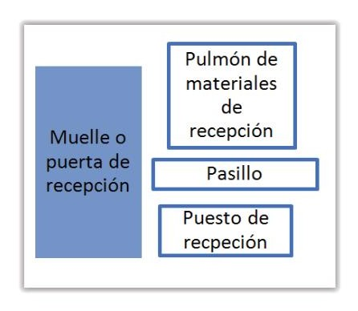
Cuestión diferente puede resultar de otros vicios ocultos que por su naturaleza no puedan detectarse en la recepción y no puedan estar motivados por transporte incorrecto, en cuyo caso y pese al cambio de propiedad y custodia, la garantía de reclamación posee mayor capacidad. En el caso de materiales eléctricos es de vital importancia que sobre ellos no haya existido ningún vertido de ningún tipo de producto químico o similar así como que hayan permanecido protegidos de cualquier humedad excesiva, hecho que debe verificarse en el control de calidad en la recepción.
Aunque no existe un protocolo particular de control de calidad específica para este tipo de recepciones suele ser extendido un mínimo del 2,5 a 3% el muestreo necesario de productos en la recepción para obtener resultados admisibles. Así mismo, el proceso de inspección debe ser exhaustivo y aleatorio tratando de que la muestra representativa que tomemos alcance a todos los posibles lotes de materiales diferentes que pueda contener nuestro pedido. Pese a que todos puedan ser de un único o de pocos artículos es más que probable que puedan haber sido fabricados en momentos distintos o en circunstancias diferentes, de ahí la necesidad de que la muestra alcance a los primeros bultos y a los últimos existiendo muestras distribuidas por el total del pedido.
Zona de almacenamiento propiamente dicho:
En general las zonas de almacenamiento estarán distribuidas por localizaciones. Dado que la localización de un material está estrechamente vinculada con su clasificación, mostraremos primero la clasificación del material.
Imagen de un almacén
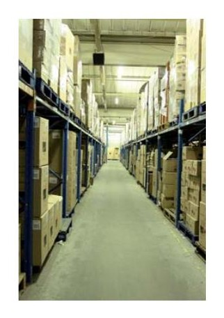
Clasificación artículos
Aunque existe más de un sistema de clasificación de artículos, emplearemos aquí el denominado sistema A-B-C. El sistema ABC es un sistema por el que clasificaremos los artículos en tres categorías según su coste relativo o importancia relativa a nuestro proyecto. A medida que se poseen muchos elementos diferentes en stock, mayor será la necesidad de control de los mismos, de ahí que empiece a resultar imposible, o al menos antieconómico gestionarlos todos como si tuvieran la misma importancia relativa. El sistema ABC clasifica los materiales en función de su importancia relativa, calculando el valor de las existencias. Se basa en el principio de Pareto, que estableció que apenas el 20% de los productos que se encuentran almacenados en un almacén suponen el 80% del coste relativo del total, aunque originalmente en lo enunció dentro de un estudio de otro tipo relacionado con las riquezas económicas del mundo y su distribución entre los habitantes.
Sistemas ABC: El método ABC clasifica por importancia relativa las diversas existencias.
Existencias A: son en torno al 20 % de los productos del almacén, y equivalen en torno al 70-80% del valor de las existencias.
Existencias B: son en torno al 30% de los artículos y un 10-20% del valor relativo, y se implementa para ellos un control menor.
Existencias C: son de poca relevancia, representan en torno al 50% de los productos pero tan solo el 5-10% del valor. Para existencias tipo B y C la mera observación puede ser un método de control válido.
Por este sistema, el procedimiento sería el siguiente:
Calcular el valor de cada artículo, como el coste de adquisición del material multiplicado por el número de unidades que se espera tener como media almacenados en el periodo de tiempo que estamos barajando. A esto además habría que incorporarle el coste de almacenamiento por el número de unidades almacenado, es decir el coste que nos ha producido tenerlo almacenado. Este concepto no obstante se verá más adelante en esta misma unidad.
Una vez para cada artículo tenemos una aproximación de los valores de coste medio en almacenamiento nos construimos un gráfico de mayor a menor importancia relativa en cuanto a valor asignado del tipo:
Construcción de gráfico para clasificación ABC
Una vez realizado esto, calculamos la línea sumatoria de los valores relativos de cada artículo representando así el sumatorio de los porcentajes calculados para cada artículo. En la mayoría de casos el mayor número de artículos quedarán contenidos en apenas los últimos diez puntos porcentuales de este sumatorio total.
Construcción de gráfico para clasificación ABC paso 2
Esquema: construcción de gráfico para clasificación ABC paso 3
Por tanto a tenor de que los artículos 1 y 2 se encuentran a la izquierda de la línea que suma el 80% del valor de los artículos los clasificaremos como Clase A. A los artículos que han quedado a la derecha de la línea del 95 % y que por tanto solo suponen un 5% del coste total en almacén los clasificaremos como artículos C. A todos los artículos que han quedado entre las dos líneas y por tanto con costes relativos de aproximadamente el 25% del valor total de artículos en almacén los clasificaremos como artículos B.
Nótese que esta clasificación se ha realizado teniendo en cuenta tanto el valor del producto, como la cantidad existente en almacén de media. Por tanto normalmente artículos de mucho valor con pocas unidades pueden haber quedado fuera de la categoría A, y mucha cantidad de artículos de valor relativamente bajo han podido también llegar a considerarse dentro de la categoría A.
¿Para qué nos sirve esta clasificación?
Pues bien lo primero que nos permite es obtener una primera aproximación para dividir las zonas de almacenamiento. Imaginemos que tenemos una obra determinada y debemos decidir la cantidad de almacenes que debemos reunir. Existirán productos que por su naturaleza, por ejemplo supongamos el material:
Tubo PVC corrugado M 20/gp5 con un cote por metro lineal en el banco de precios de 18 céntimos de euro por metro para empotrar en pared.
Casi con seguridad pese a requerirse muchos metros del mismo su clasificación será habitualmente C. Para él podemos desestimar realizar un control
exhaustivo de cada metro lineal disponible. Es decir, la unidad de medida del material en mediciones de obra se realizará por metro, pero lo recomendable para nosotros desde el punto de vista del control de inventario (conteos) puede limitarse a un control somero del número de rollos existentes, y del mismo modo la zona de almacenamiento preferente de este material puede quedar relegada a una zona de acopio al exterior menos vigilada que otros artículos.
Sin embargo en la perspectiva contraria, si disponemos de un material como:
Cond. aisla. RV-k 0,6-1kV 240 mm2 Cu con valor según el banco de precios de 42,98 €/m
Es evidente que su clasificación será mayor que la del tubo, y por tanto se encontrará generalmente entre los artículos A o al menos B. Por tanto el control de su inventario cuando se realice su conteo y su vigilancia se mantendrá práctica al metro, midiendo o aproximando incluso bobinas ya comenzadas. Además, la vigilancia del mismo por su importancia relativa para el interés económico de la obra será mucho mayor y de ahí que para este material debamos plantearnos la instalación de un almacén tipo container y similar, tanto para el aseguramiento de su protección de la humedad y otros agentes atmosféricos como por su vigilancia ante el robo, etc.
En ocasiones la clasificación puede ser alterada por nuestro interés. Imaginemos que almacenamos una única unidad de:
Inversor conex. red 5kW monof. Con un valor de 3017,72 €/ud según el banco de precios.
Obviamente, puede que la clasificación del producto (por existir sólo una unidad) sea clasificada fuera de la categoría A. Sin embargo con objeto de garantizar su protección, vigilancia y control lo recomendable será tratar el artículo en stock con el nivel de exigencia para el material de clasificación A. Por eso consideraremos la clasificación inicialmente calculada como una primera aproximación.
Reglas de almacenamiento:
Antes de ver las localizaciones y los tipos que existen definiremos algunas reglas de almacenamiento.
Definición
Regla de almacenamiento: son aquellos tipos de procedimientos de almacén que adjudican una lógica común a una serie de artículos en cuanto a sus reglas de entrada, almacenaje y salida.
Entenderemos mejor las reglas de almacenamiento definiendo algunas reglas extendidas:
LIFO: Es acrónimo de sus siglas en inglés (Last In, First Out) cuya traducción sería último en entrar, primero en salir. Cuando un producto es recepcionado y se aprueba su paso a una ubicación definitiva donde ya existían artículos iguales pero de lotes anteriores, tendremos productos de dos lotes diferentes para un mismo artículo. EN el siguiente despacho que hagamos de este artículo podremos bien elegir el último que llegó a la estantería, bien el primero que llegó a la estantería. La regla LIFO es la que trabaja con el primer caso, es decir, que en el siguiente despacho, recogerá los últimos artículos que fueron ubicados en la estantería.
Esquema entrada-salida de un sistema LIFO
Primer artículo que llegó
Loc 03
Último artículo que saldrá
Segundo artículo que llegó
Loc 03
Segundo artículo que saldrá
Ultimo artículo que llegó
Loc 01
Primer artículo que saldrá
FIFO: Es acrónimo de sus siglas en inglés (First In, First Out) cuya traducción sería primero en entrar, primero en salir. Es el caso contrario al anterior, en el caso del FIFO el primer artículo que será despachado será aquel que llegó en primer lugar.
Esquema entrada-salida de un sistema FIFO
Primer artículo que llegó
Loc 03
Primer artículo que saldrá
Segundo artículo que llegó
Loc 03
Segundo artículo que saldrá
Primer artículo que llegó
Loc 01
Primer artículo que saldrá
En este segundo esquema FIFO, el orden en que saldrán los artículos dependerá exclusivamente del orden en que llegaron. Nótese que en el caso anterior, el LIFO, el orden en que saldrán los productos cambia cada vez que llega un nuevo lote de artículos, de modo que se corre el riesgo de que la permanencia en el almacén de los primeros lotes que llegaron se alargue mucho en el tiempo, pudiendo no rotar nunca de su ubicación si nunca se llega a necesitar el último producto. Por este motivo el sistema LIFO, necesita de cierta renovación cada cierto periodo de tiempo, además de que resulta completamente desaconsejable en productos perecederos o en aquellos que el paso del tiempo en almacén pueda degradar su calidad o afectar a su funcionamiento.
Sin embargo para productos muy duraderos, facilita la actividad de almacenaje y conteo, pues en primer lugar prácticamente sabremos el número de unidades que quedan con un simple vistazo toda vez que los artículos no se van “desplazando” dentro de las ubicaciones, y además se permite que una estantería pueda almacenar al fondo de ellas más unidades.
Operativa del sistema LIFO:
Primero en entrar, tercero en
Segundo en entrar, segundo en
Primero en entrar, primero en
Hueco Hueco
salir
salir
salir
Primero en entrar, segundo en
Segundo en entrar, primero en
Hueco Hueco Hueco
salir
salir
Primero en entrar, tercero en
Segundo en entrar, segundo en
Cuarto en entrar, primero en
Hueco Hueco
salir
salir
salir
En el sistema FIFO sin embargo, el hecho de ir enviando las primeras unidades, producirá un “desplazamiento relativo del almacenamiento de artículos con respecto a las estanterías y en el caso de que se acumulara más de una unidad en el fondo y se le colocara el siguiente material delante, nos obligaría a realizar movimientos de artículos cada vez que tuviéramos que acceder a los primeros artículos que entraron en un emplazamiento determinado.
Desplazamiento relativo del sistema FIFO:
Primero en entrar, primero en
Segundo en entrar, segundo en
Primero en entrar, tercero en
Hueco Hueco
salir
salir
salir
Segundo en entrar, primero en
Tercero en entrar, segundo en
Hueco
Hueco Hueco
salir
salir
Segundo en entrar, primero en
Tercero en entrar, segundo en
Cuarto en entrar, tercero en
Hueco
Hueco
salir
salir
salir
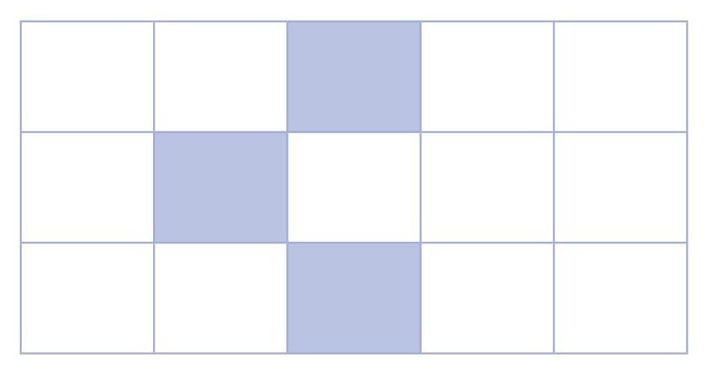
El ejemplo concreto que se ha mostrado es para el caso de regla de reposición “siguiente posición libre”. También podrían haberse rellenado huecos atrás del siguiente en salir en lugar del primero. Veremos esto más adelante en reglas de picking y almacenaje. En cualquier caso puede observarse que el sistema FIFO presenta la ventaja que los productos que entran primero rotan primero, sin embargo nos produce mayores “movimientos en estanterías” y una necesidad de mejor control de los lotes, además de obligarnos a realizar movimientos de carga en caso de que exista más de un producto almacenado delante de otro y sólo sea accesible desde uno de los lados.
Algunos sistemas de almacenaje emplean rodillos mediante los cuales una carga que entra, empuja a las siguientes hacia delante. De este modo si siempre uno de los costados de las estanterías posee la entrada de mercancía, y siempre realizamos el picking o shipping por la otra cumplimos con relativa facilidad la regla FIFO.
Operativa del sistema FIFO en ubicaciones dinámicas:
Tercero en entrar, tercero en
Segundo en entrar, segundo en
Primero en entrar, primero en
Hueco Hueco
salir
salir
salir
Tercero en entrar, segundo en
Segundo en entrar, primero en
Hueco Hueco Hueco
salir
salir
Cuarto en entrar, tercero en
Tercero en entrar, segundo en
Segundo en entrar, primero en
Hueco Hueco
salir
salir
salir
Otra regla extendida es el sistema FEFO. Por el sistema FEFO, independientemente del orden en que entró, tomaremos la siguiente salida la que tenga fecha de caducidad más cercana, First Expired, First Out, es decir, primero que caduca, primero en salir. Para cumplimiento del sistema FEFO no tendría sentido la inversión en un sistema dinámico de estanterías como se ha mostrado en el anterior esquema, pues si recibiéramos un lote de artículo con fecha de caducidad menor que el próximo envío paro mayor que el último volcado, habríamos de mover igualmente cargas para cumplir la regla. Más bien
en los sistemas obligados a trabajar con FEFO, como puede ser sistemas con caducidades muy cortas o productos muy costosos con fechas de garantía limitada se tiende a no permitir que a un artículo se le coloque otro por delante, yendo a buscar en cada momento el que menor fecha de caducidad tenga de forma directa. Lógicamente estos sistemas acostumbran a trabajar con lote y fecha de caducidad desde la recepción y sistemas informáticos que nos indique exactamente la localización del próximo producto en salir.
División de localizaciones:
La zona de almacenamiento propiamente dicha estará dividida por localizaciones. Las localizaciones serán espacios físicos determinados por un código único que consideraremos el identificador de la localización. Una localización será única e independiente del material o artículo que en ella esté ubicada.
Las localizaciones pueden ser desde un simple espacio señalizado en el suelo, hasta cada unidad en que se encuentra dividida por ejemplo una estantería.
Supongamos un container en cuyo interior se encuentran estanterías con la siguiente disposición:
Esquema: Disposición de localizaciones en interior de container
Loc 01
Conteiner 20 pies
Loc 02 Lco 03
Supongamos por ejemplo que las localizaciones están compuestas por:
Loc 01: estantería convencional de división siguiente:
5 columnas a lo largo.
3 filas de altura.
Loc 02: Estantería bobinas con la siguiente disposición:
4 columnas.
2 filas en altura.
Loc 03: Espacio reservado en el suelo sobre palet sin división en altura de 100 x 120 cm.
En tal caso, para la estantería convencional 1, se tendrían las siguientes subdivisiones:
Loc01 subdivisión de las localizaciones:
x1 x2 x3 x4 x5
Loc 01 x5 y3
Loc 01 x4 y3
Loc 01 x3 y3
Loc 01 x2 y3
Loc 01 x1 y3
Loc 01 x5 y2
Loc 01 x4 y2
Loc 01 x3 y2
Loc 01 x2 y2
Loc 01 x1 y2
Loc 01 x5 y1
Loc 01 x4 y1
Loc 01 x3 y1
Loc 01 x2 y1
Loc 01 x1 y1
De este modo tendremos identificado de modo inequívoco cada hueco disponible en la localización y podremos asociar la presencia en almacenamiento de un determinado artículo de forma perfectamente identificada.
Del mismo modo para la localización L0c2 tendremos:
Loc 02subdivisión de las localizaciones:
x1 x2 x3 x4
Loc 02 x1 y2
Loc 02 x2 y2
Loc 02 x3 y2
Loc 02 x4 y2
Loc 02 x1 y1
Loc 02 x2 y1
Loc 02 x3 y1
Loc 02 x4 y1
Sin embargo para la localización Loc 03 no tendremos subdivisiones, por lo que se considerará un volumen único que puede contener diferentes artículos con un único código identificativo Loc 03. A este tipo de localización la llamamos localización tipo suelo.
Recuerda
Conocemos por localización de almacén a un espacio (generalmente una estantería) que agrupa los huecos o espacios donde nos está permitido el almacenamiento de paquetes y/o artículos dentro del almacén. EL modo de agrupar estas localizaciones puede ser diferente, pero generalmente una localización responde a una zona homogénea que posee una misma entrada, por ejemplo un mismo pasillo. Cada localización admitirá luego sub-divisiones en uno dos o tres ejes según el tipo de localización permita.
A continuación listamos los tipos de localización en función de su tipo:
Localización convencional: se tienen por localizaciones convencionales a aquellas que se organizan como estanterías con huecos verticales y horizontales en función del número de columnas (eje x) y filas (eje y). Pueden disponer de diferentes medidas y formas, pero en principio supondremos que una localización convencional solo permite la entrada salida de artículos por una de sus caras, teniendo en planta un solo hueco de fondo (eje z). Ejemplo de este tipo de localización será la localización Loc 01 del la pantalla anterior.
Localización de tipo bobinas: se emplean para albergar formatos de tipo bobina, de modo que permiten el giro libre de una bobina y por tanto puedan desenrollarse de bobinas de hilo y cortarse a la medida que interese los hilos en ella arrollados. En cuanto a su disposición son completamente análogas a las anteriores en filas y columnas y del mismo modo entendemos que posee una única ubicación de fondo (eje z) como en el caso de la Loc 02 citada previamente, y que esta solo estará accesible por una de sus caras, aunque podrían existir libremente accesibles por ambas caras y emplearse por ejemplo como divisores de un pasillo.
Localización o estantería tipo cantiléver: Se emplean para albergar artículos de gran longitud. La vista lateral de una estantería tipo cantiléver tendría por ejemplo un perfil del tipo del de la siguiente figura:
Perfil de estantería Cantiléver:
En este tipo de estantería el material se soporta normalmente por sí mismo sin existir como tal un paramente horizontal. En ellas se suele almacenar materiales como paneles cartón/yeso, tuberías, tubos, macizos, etc.
En cuanto a su distribución suelen considerarse las distintas filas en altura como localizaciones (eje y), pero dependiendo del caso pueden o no subdividirse en eje x. Si por ejemplo una misma estantería cantiléver fuera a albergar tubería de 6 m y de 12 m de longitud podría decidirse una división intermedia de alguna o todas sus alturas, aunque como lo habitual es siempre disponer una única localización para un artículo no suele dividirse en el eje horizontal. Es decir puede existir estanterías cantiléver con divisiones sólo en altura por tanto solo en eje Y, divisiones en eje Y y también en x, e incluso divisiones mixtas, por ejemplo que en la altura y1 toda la estantería se única y1 y en la altura y2 se considere x1 y x2. Obsérvese que como tal no tiene que existir ninguna diferencia física en la estantería sino tan solo en el identificador y en la forma o artículos que ella van a estar contenidos.
Localización o estantería tipo compacta mono: Son sistemas de almacenamiento compactos son idóneos para almacenar artículos del mismo tipo, cuando existen gran número de contenedores por artículos y no existe demasiado espacio. Estos sistemas permiten la máxima utilización del espacio disponible. A diferencia de las estanterías convencionales tienen casi el mimo fondo (eje z) del que tienen de largo (eje x), de modo que permiten un gran almacenamiento, aunque con mayor dificultad para el mismo sobre todo en la zona central, donde unas cajas deben empujar a otras o accederse de modo más complejo. En principio un sistema mono no está dotado de rodillos como
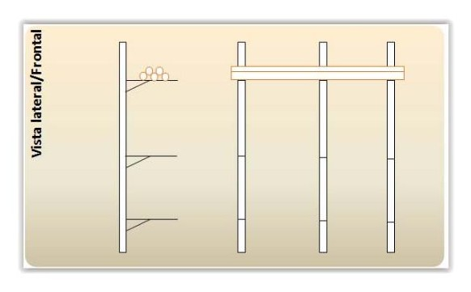
en el caso de las dinámicas, por lo que sólo se utiliza para artículos que por su peso específico permitan cierto movimiento en las estanterías.
Localización o estantería tipo compacta multi: Son completamente análogas a la anterior, solo que en el caso de las multi indica que además se almacenarán artículos diferentes, y no únicos como en el caso de las mono. Obviamente este tipo de utilización multi compacta debe emplearse sólo como último recurso cuando no se disponga de espacio y para un material que permita por su durabilidad el mal sistema de gestión de reglas de entrada salida que este tipo de estantería implica.
Localización o estantería dinámica (FIFO): tal y como vimos durante la descripción de las reglas de entrada salida, son estanterías pensadas para el cumplimiento de un sistema FIFO. Aunque su coste es mayor que el de las estanterías estándar, la inversión en el caso de artículos que requieran un sistema FIFO este tipo de estanterías rentabilizará la inversión por el ahorro de movimientos futuros de los contenedores de los artículos. En principio están pensadas como es lógico para que en cada túnel de rodillos o columna siempre exista el mismo artículo, entrando siempre los lotes nuevos por la cara posterior de la estantería y realizando el picking o el shipping siempre a través de la cara opuesta, por lo que este tipo de estantería requerirá que existan pasillos por sus dos caras.
Localización o estantería Push back (LIFO): Es una estantería análoga a la anterior, salvo que en este caso lo que se pretende es dejar una única cara de acceso, de modo que la última entrada empuja hacia el fondo la carga anterior, recogiéndose por tanto siempre la última carga de artículos en entrar. Este tipo de estanterías es una buena solución en aquellos casos que se dispone de mucho fondo en la estantería y por tanto se puede aprovechar esta circunstancia para almacenar más número de artículos en varias filas en el (eje z). EL producto tiene que adaptarse correctamente al sistema LIFO siendo duradero en el tiempo.
Localización suelo: es el caso más sencillo y consiste únicamente en una división señalizada en el suelo de nuestro almacén. No permite distinguir localizaciones en altura (eje y), aunque sí puede disponer de ellas en el eje x y el eje z. Para que estas divisiones del suelo en el eje x y en el z tengan sentido deben estar preestablecidas o adaptadas a un contenedor de dimensiones conocidas como por ejemplo las divisiones de las medidas de un palet.
Localización o estantería de carro satélite (LIFO): Son sistemas semiautomáticos, en los que la carga se desplaza por la estantería con un sistema motorizado denominado carro satélite. Esto evita que las carretillas tengan que entrar por los pasillos eliminando su necesidad o reduciéndola al mínimo para el paso del personal de almacén.
Hay que distinguirlo de los sistemas completamente automatizados. La diferencia radica en que el sistema de carro satélite se entiende para sistemas únicamente LIFO, donde el carro satélite discurre por el interior de la estantería, mientras que los segundo (los automatizados) el sistema de transporte a la estantería discurre por los pasillos, permitiendo en ese caso ubicarlo en cualquier punto de la estantería y en cualquier regla de entrada y salida (aunque siempre con reposición en almacenaje y sin posibilidad de picking automático).
Estanterías convencionales.
De todos los anteriores tipos de localizaciones las más empleadas para almacenamiento en obra serán la localización suelo, las estanterías convencionales, las de bobinas y las cantiléver, pues el resto por su complejidad están más bien indicadas para almacenes permanentes.
Una de las ventajas de realizar la denominación de las localizaciones por estanterías en lugar de por sus almacenes es la posibilidad de transportar una localización y todo su contenido de una ubicación a otra. Por ejemplo imaginemos una estantería de bobinas que contienen los tipos de cables que vamos a requerir para una obra. Inicialmente esta se ubica en el interior de un container de obra en la zona de acopio de la obra. Una vez la obra se encuentra más avanzada la estantería completa se transporta a la segunda planta de la obra y el container es retirado o empleado para otros materiales. Obsérvese que desde el punto de vista de la gestión de inventario y del conteo de artículos no ha habido que realizar ningún cambio.
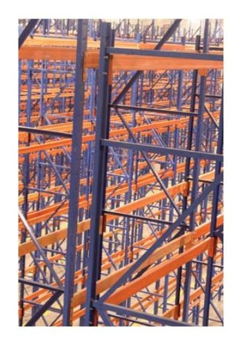
Recuerda
Conocemos por localizaciones a las estanterías empleadas en el almacenamiento las cuales se subdividen en función de ejes x,y,z en función de sus huecos, siendo en almacenes de obras las más habituales las convencionales, las de bobinas, suelo simple y las cantiléver.
2.2. Tipos de almacenamiento
Los almacenes pueden clasificarse en función de muy diversas clasificaciones. Veremos en el presente ejemplos de estas clasificaciones tendiendo a las distintas circunstancias y criterios del almacenamiento.
Los almacenes pueden clasificarse atendiendo a los siguientes criterios:
Según sus existencias
Según su ubicación
Según su localización
Zonas más comunes de un almacén
Según sus existencias clasificaremos aquellos materiales que son de interés para una obra eléctrica:
ALMACEN DE ELEMENTOS, COMPONENTES, EQUIPOS: Este almacén tiene como función principal el aprovisionamiento oportuno de los elementos que se van a requerir posteriormente en obra. Se distinguirán diferentes puntos de almacenamiento en función de la clasificación ABC de estos materiales. Normalmente aquellas ubicaciones más seguras y mejor vigiladas albergarán los materiales de clasificación A. Por otro lado aquellos materiales de bajo coste que permitan su acopio exterior suelen almacenarse de este modo dado las limitaciones de espacio propias de las obras.
ALMACEN DE MATERIALES AUXILIARES: Los materiales auxiliares son todos aquellos que no son componentes de un producto pero que se requieren
para su instalación final. Podemos mencionar pegamentos, tacos, tornillos, cemento, arena, etc.
ALMACEN DE HERRAMIENTAS: Estos almacenes tienen por función albergar las herramientas necesarias para la obra. Por muchos motivos es interesante disponer de un almacén diferente para herramientas que para materias primas, sobre todo porque unos y otros tienen diferentes necesidades en cuanto número de veces que se usan, periodicidad de entradas/salidas, y atmósfera en que unos se degradan muy rápidamente mientras otros no. Ejemplo de estas herramientas son: equipos de medida, Epis, útiles eléctricos, etc.
ALMACEN DE MATERIALES DE DESPERDICIO: como hemos visto, en muchas ocasiones los desperdicios de obras eléctricas poseen aún valor en el mercado, por lo que resulta rentable su acumulación hasta disponer de cantidad suficiente para realizar su transporte a puntos de recogida.
ALMACEN DE MATERIALES OBSOLETOS: Algunos elementos pueden quedar obsoletos para su instalación en obra. Sin embargo si el motivo de la obsolescencia aún permite su reutilización en otras aplicaciones, resulta recomendado albergarlo en lugar diferente al resto de materiales, de ahí la necesidad de este tipo de almacenes. Ejemplo: Equipos de aire acondicionado de temporada anterior a la que se está instalando en la obra pero que pueden resultar válidos individualmente en otras obras diferentes.
ALMACEN DE DEVOLUCIONES: Es una zona del almacén o un almacén específico donde destinar aquellos materiales que por algún motivo van a ser devueltos. Para evitar que puedan utilizarse y conservar los envases originales es completamente recomendable que permanezcan en una zona completamente diferente a los aptos para su uso o como mínimo en zonas perfectamente indicadas como material de devolución.
Almacenamiento exterior de palets.
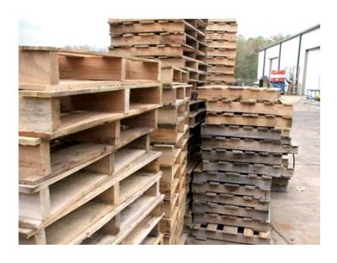
Atendiendo a su localización:
ALMACENES CENTRALES: aquellos que se localizan lo más cerca posible del centro de fabricación. Están preparados para manipular cargas de grandes dimensiones.
ALMACENES REGIONALES: aquellos que se ubican cerca del punto de consumo. Están preparados para recoger cargas de grandes dimensiones y servir mediante camiones de distribución de menor capacidad. La elección de almacenes centrales o almacenes regionales depende del tipo de carga y la estructura de costes de la empresa. Así productos de bajo valor, o costes de transporte elevados, conducen al uso de almacenes regionales. Por el contrario con costes de almacén elevados, por el valor del producto, implican almacenes centrales. En cualquier caso existen métodos para la evaluación de la mejor decisión.
CENTRO DE TRÁNSITO: Conocidos en inglés como Cross-dock o crossdocking, son almacenes que no almacenan, sólo mueven productos y los reagrupan. Un ejemplo claro son los almacenes de transporte urgente. Este tipo de centros, muy complicados de gestionar, permite aumentar la eficiencia del transporte entre nodos y mantener altos niveles de servicio al cliente reduciendo el stock total. El grupaje sí es una de sus funciones para mejorar los costes de la distribución.
Definición
Grupaje: término empleado en logística para denominar a la unión en grupo de palets, o cajas de diferentes orígenes para que compartan un mismo medio de transporte.
CENTRO DE CONSOLIDACIÓN: Estos almacenes reciben productos de múltiples proveedores y los agrupan para servirlos al mismo cliente. Realizan la función del packing a gran escala.
CENTRO DE RUPTURA: Tienen la función inversa de los centros de consolidación. Recibe la carga de un número reducido de proveedores y sirven a un gran número de clientes, con necesidades dispares. Reducen el número de
contactos de los fabricantes con los clientes finales y reducen el movimiento de los clientes que únicamente han de acudir a un centro de ruptura para recoger múltiples productos. La mayor simplicidad de estos dos sistemas hace que en la práctica, empresas con múltiples proveedores y múltiples clientes (como los sistemas de distribución) des agrupen las funciones pasando a tener un centro de consolidación para el aprovisionamiento y un centro de ruptura para la distribución.
ALMACENES CÍCLICOS O ESTACIONALES: Son almacenes que recogen una producción puntual para hacer frente a una demanda constante, o que permiten resolver una demanda puntual frente a una producción más constante.
ALMACENES DE CUSTODIA A LARGO PLAZO: Es el único de los almacenes analizados cuyo objetivo es estar lleno, sin importarle costes de transporte, demandas o ritmos de producción.
Atendiendo al criterio de ubicación del almacén tendremos:
ALMACENAJE INTERIOR: Almacenaje de productos con protección completa contra cualquiera de los agentes atmosféricos. EN algunos incluso existirá control sobre la temperatura y humedad para garantizar que aquellos materiales que tienen mayor peligro de verse afectados por ellos puedan deteriorarse.
Almacenamiento interior.
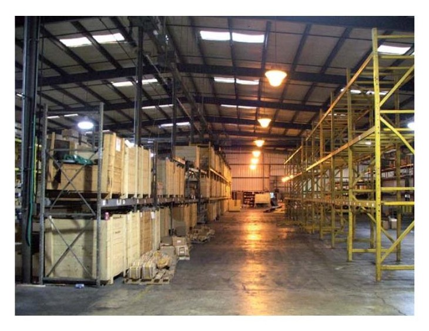
ALMACENAJE SEMIPROTEGIDO O DE SEMIINTEMPERIE: Son aquellos almacenamiento en que se da de forma intermedia una protección parcial de los agentes atmosféricos. Se entienden que al menos dispondrá de suelo diferente al propio terreno, que estarán cubierto y ocasionalmente tendrán protección de 1, 2,3 de sus caras exteriores. En general se pretende que queden correctamente protegidos de agua directa o correntías en su interior, permitiendo que determinados materiales no se vean afectados directamente por la humedad o los rayos del sol.
ALMACENAJE AL EXTERIOR O AL AIRE LIBRE: Son zonas de acopio que normalmente están completamente abiertas. Es el caso de zonas de acopio existentes en el interior de los vallados de obra. Sólo son apropiados para materiales que resistan perfectamente la intemperie como puedan ser tubos corrugados, o bobinas embaladas aún no comenzadas.
Por zonas, los almacenes se pueden clasificar en:
ZONA DE RECEPCIÓN
Se incluye en zonas de recepción la propia puerta de entrada o muelle, el pulmón de entrada, la zona destinada al control de entrada, etc.
ZONA DE ALMACENAMIENTO
Son todas aquellas localizaciones donde está previsto ubicar los artículos para su posterior utilización en obra.
ZONA DE TRÁNSITO
Son aquellos espacios previstos para el tránsito de materiales y que por tanto no deben ser ocupados por ningún material que pueda entorpecer los movimientos de los materiales en el interior del almacén. Deben estar a ser posible señalizados. Los pasillos y demás forman parte de estas zonas. En aquellos almacenes donde resulte posible deben señalizarse las zonas de tránsito de personas y maquinarias de carga cuando existan por separado, incluyendo las zonas de cruces, etc.
ZONA DE EMPAQUETADO
Es la zona donde propiamente se terminan de empaquetar los productos que van a ser despachados. Se incluyen aquí los embalajes, paletizados, y todos los útiles necesarios para llevar a cabo los mismos. Es habitual que cercano a esta ubicación se ubique la zona de almacenamiento de material de embalaje, cajas, flejes, etc.
ZONA DE PRODUCTO NO CONFORME
Agrupan los lotes de productos obsoletos, los que están pendientes de devolución, los que han sido alterados durante el transporte, los caducados, etc.
ZONA DE RESIDUOS
Alberga los elementos que son residuos. En esta zona existirá una clasificación de los tipos de residuos y el tratamiento específico de cada uno de ellos.
ZONA DE MAQUINARIA
Cada vez es más habitual que exista una zona específica para dejar la maquinaria que se emplea en la carga y descarga. La razón de unificarla suele residir en el hecho de que la mayoría de esta maquinaria es de tipo eléctrico, y por tanto su funcionamiento es a baterías. Como también la mayoría son de baterías de plomo ácido, hace que durante su carga y mantenimiento se generen gases, y se derramen líquidos ácidos, que deterioran en gran medida suelos y equipos. Por ello conviene que existen protecciones especiales en las zonas de carga de este tipo de maquinarias.
Camión transportando un container.
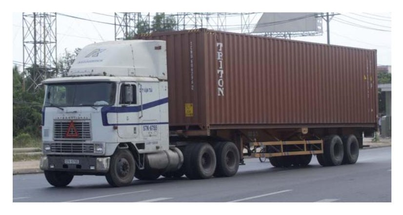
2.3. Almacenes de obra: ubicación, organización y seguridad
El proceso de diseño de las ubicaciones, organización y seguridad de un almacén requiere una serie de factores a prever relacionadas con los siguientes aspectos:
Tipo de contenedores que albergará.
Equipamiento de carga/descarga que se necesitará.
Número de localizaciones/estanterías y tipos de las mismas.
Ubicación de los muelles y tipos.
Ubicación de los pulmones y tipos.
Recorridos de ubicación.
Recorridos de picking
Veremos en detalle cada una de estas variables de decisión:
Tipo de contenedores que albergará.- Debe decidirse el tipo de contenedores, si existirán éstos y cuales se dispondrán. Los contenedores por excelencia en cuestiones de almacenaje son los palets, distinguiéndose los dos tipos generales:
Palet Universal: Tiene por medidas en planta 100 x 120x16,2 cm y es el tipo más extendido en un contexto mundial, siendo el predominante en EEUU, Canadá, etc. Aunque su peso máximo por palet depende del palet concreto así como la altura hasta la que podemos cargarlo, pero suele considerarse un máximo de 1500 Kg, y una altura máxima de 220/240 cm en función de otros factores que veremos.
palet universal:
Europalet: Es una variante al palet universal que pretende una mejor adaptación a espacios más reducidos y mayores grupajes en transporte. Sus medidas son 80 cm x 100 cm x 14,4 cm, de tal modo que una de sus caras (la mayor de 100 cm) puede encajarse con la menor del palet universal y de este modo puedan compartir los mismos medios de transporte a razón de 1,5 europalet por cada palet universal. La altura también puede varia y su carga máxima habitual se encuentra en torno a los 1000 Kg.
Europalet:
Esquema mixto palet y europalet:
Patrón de transporte mixto palet universal/Europalet
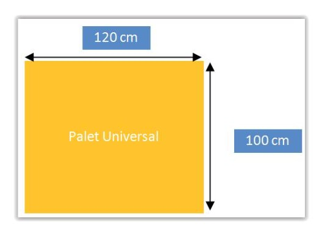
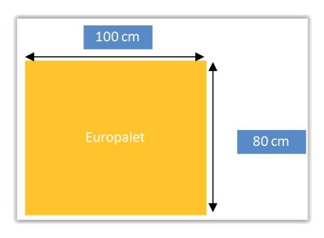
Eurocaja: Es un formato de caja realizado en plástico estandarizado para su uso en almacenes. Sus medidas son 40x60x42cm. Tiene un peso de tara de unos 3,5 Kg y puede albergar cargas de hasta 20 Kg.
Europalet:
Además de los formatos estandarizados anteriores pueden existir otros contenedores que debemos decidir dentro de la organización del almacén.
Los contenedores estarán etiquetados permanentes de almacén como las eurocajas se etiquetarán de modo único para su control. EL etiquetado único también puede existir para determinados tipos de palet que siempre permanecen en el almacén o que siempre son los mismos entre varios almacenes de la misma organización.
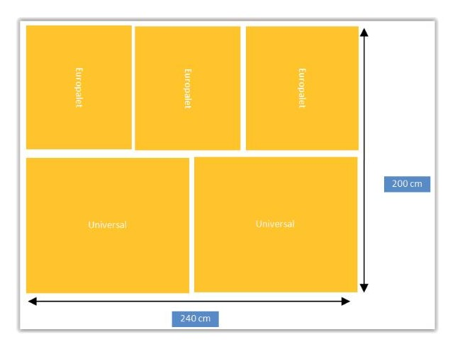
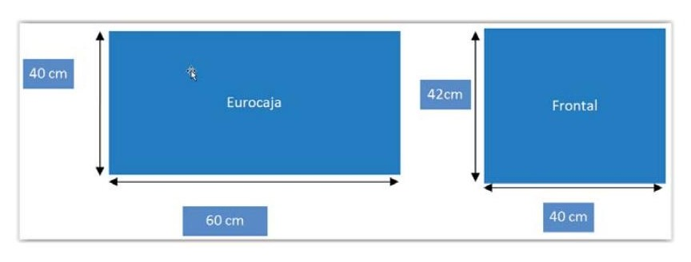
Recuerda
Palet universal y europalet mantienen una relación de 1:1,5 siendo una de sus caras de la misma medida 100 cm y las otras 120:80 cm respectivamente.
Equipamiento de carga/descarga que se necesitará
Dentro del equipamiento de almacén nos encontramos los distintos medios de transporte de mercancías. Una clasificación de los mimos más generalmente empleados en almacén sería:
Carretilla manual
Es un pequeño vehículo diseñado para ser propulsado por una sola persona y utilizado para el transporte a mano de la carga. Es ampliamente usada para cargar cajas u otros elementos de pequeña entidad.
Traspaleta manual
Son de uso habitual para movimientos de carga en el interior de almacenes. Su posibilidad de elevación es limitada por lo que si se requiere apilar cargas no son suficientes por sí para todo el trabajo de almacenamiento.
Traspaleta motorizada
Tiene la misma función que la anterior pero en este caso están asistidas por motores eléctricos tanto para ayudar en el avance como en la elevación. Su posibilidad de elevación es limitada como en el caso de la anterior por lo que también se requerirán otros elementos para poder apilar cargas. Además ambas son inútiles en obras en las que el firme no sea perfectamente liso, por lo que su uso está limitado a interior de almacenes o muelles.
Carretilla elevadora o apilador motorizado
Su uso más frecuente es para elevar cargas en el interior del almacén, es decir, para levantar paletas y plataformas. La elevación es limitada y lenta, y cuando se utilizan cargas pesadas provoca fatiga en la persona que la maneja. Estos equipos se utilizan para carga y descarga de estanterías ubicadas en las áreas de almacén, y sirven también como elevadores. Su empleo requiere
de cursos específicos para su conducción por el peligro que pueden reportar. Según su entidad los hay de muchos tipos, pueden ser eléctricos o también con motores de combustión (estos últimos sólo para su uso en exteriores). Pueden moverse por pavimentos ligeramente abruptos por lo que resultan idóneos en aquellos acopios de obras en que existe un firme suficientemente liso y estable para ellas.
Carretilla elevadora
Manipulador telescópico
Estos elementos son maquinaria de carga/descarga para obras. Permite elevar cargas a alturas importantes, por lo que pueden sustituir puentes grúas o similares en obras que no tengan grandes alturas. Son muy versátiles y por ello ampliamente utilizadas en distribución de obras.
Número de localizaciones/estanterías y tipos de las mismas.
Una vez tenemos determinados los tipos de contenedores que albergarán los elementos necesarios a almacenar se tendrá que dotar de estanterías y/o localizaciones para cada tipo de material que vamos a requerir. Los tipos de estanterías así como su número serán determinantes para cumplir el correcto servicio de la obra. Habitualmente existirán una combinación de ubicaciones de tipo convenciones, con otras como estanterías de bobinas, cantiléver, etc. y otras zonas combinadas exteriores o de semi-intemperie donde ubicar aquellos materiales de mayor tamaño y menor movilidad.
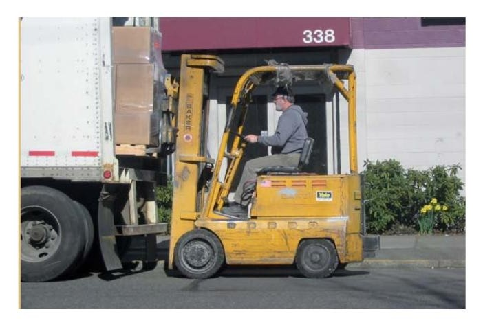
Ubicación de los muelles y tipos.
Habrán de determinarse las zonas por donde se realizarán las cargas y descargas de materiales. En lugares con falta de espacio podemos requerir tener un único espacio (por tanto de tipo entrada/salida, mientras que aquellas donde las circunstancias lo permitan resultará interesante combinar una zona para entrada y otra diferente para salidas.
Ubicación de los pulmones y tipos.
EN directa relación con la anterior la existencia de una zona de pulmón ayuda a descongestionar el tránsito en el interior de los almacenes y facilitar la labores de control de calidad, etiquetado y correcto control por lo que es vital que estas zonas se encuentren en sintonía con los muelles o zonas de entrada salida y a ser posible existan dos diferentes entre entrada y salida. En cado de no existir suficiente espacio para ello puede unirse en un único tipo de de pulmón de entrada/salida y establecer procedimientos claros para que no se confundan las mercancías de un tipo y otro.
Recorridos de ubicación.
Los recorridos de ubicación son determinantes para el correcto funcionamiento de un almacén. Éstos se refieren no solo a los recorridos de los trayectos de almacén (control de tráfico) sino también al orden en que requeriremos primero a unas ubicaciones y a continuación a otras, e incluso dentro de una localización a que hueco comenzaremos asignando mercancía para ubicar y en qué orden.
Veremos cada una de ellas por separado:
Recorrido de ubicación en almacén: tráfico de materiales.
Se refiere a la lógica de orden y dirección en que deben recorrerse los huecos disponibles en las localizaciones desde el punto de vista de las nuevas recepciones. Deben adecuarse a las reglas de ubicación que se hayan seleccionado para los artículos de almacén o al menos ser compatibles con ellas para una correcta organización del almacén.
Ejemplo recorrido de ubicación:
Según la lógica anterior, los primero artículos que se reciban se localizarían en la locación 01 comenzando por la cara que vemos en la posición inferior izquierda del dibujo. En las siguientes se irían rellenando en la dirección de las flechas hasta completar la localización 01 momento en que empezaría a emplease la localización 02. Si las localizaciones permitirán además apilar carga y/o dispusieran de más divisiones, abría que indicar en la lógica de ubicación a emplear para estas posiciones.
Si tomamos como ejemplo una localización de 4 espacios en eje x, dos en eje y y una sola unidad en eje z para la cara vista podríamos tener una lógica como la que se muestra en el esquema siguiente:
Ejemplo de recorrido de ubicación vertical:
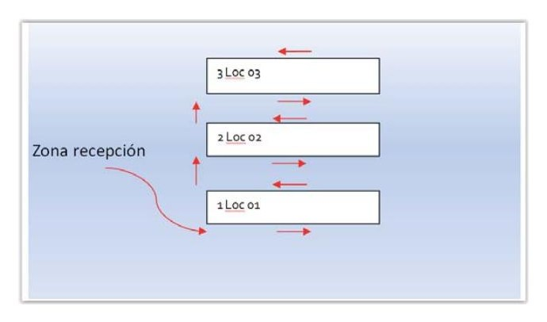
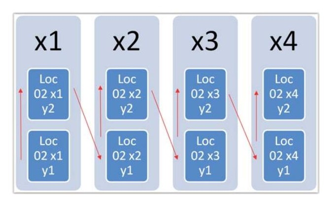
Recorridos de picking
Responde a la lógica en que realizaremos los recorridos de picking para despacho de artículos en el almacén. Debe responder a una lógica correcta para con la lógica de ubicación y regla de entrada salida de los artículos, es decir, permitir cumplir con la regla de entrada salida.
Ejemplo recorrido de ubicación y picking sentidos opuestos:
En rojo se he representado el esquema de recorrido de ubicación y en verde el recorrido de picking.
O en otro caso podría darse:
Ejemplo recorrido de ubicación y picking sentidos iguales:
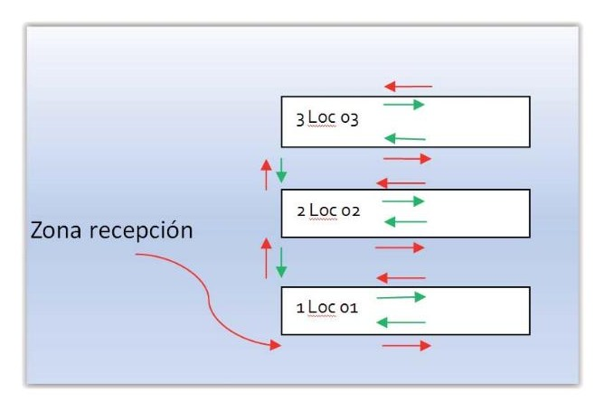
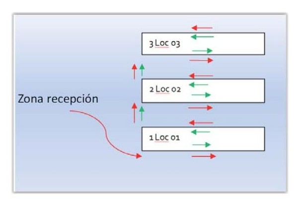
Estas lógicas de ubicación y picking deben adaptarse además a las reglas de entrada salida de artículos que debamos cumplir.
En el caso de aplicar una regla LIFO si empleamos el primer esquema de sentidos opuestos, tomaremos en picking siempre el último artículo en entrar, esa misma ubicación sería la primera que se rellenaría en la siguiente ubicación de un producto de recepción. De este modo si por ejemplo el almacén estuviera ocupado a un 50% de capacidad estarían ocupadas la Loc 01 y la mitad de la Loc 02 y siempre estaría en la última ubicación el elemento más nuevo recibido, por tanto en caso de trabajar con una regla LIFO el esquema de sentidos opuestos resultará sencillo y práctico.
En caso de que se necesite trabajar con un esquema FIFO, el control del almacenamiento resultará algo más complejo. Supongamos que empleamos los recorridos del segundo esquema sentidos iguales. Imaginemos que recepcionamos 4 unidades de artículos y cada una de ellas ocupa un hueco de la localización 01. Estarían ocupadas inicialmente las cuatro primeras posiciones de la Loc 01. Si a continuación tomamos un artículo, este sería el que ocupa la Loc 01 x1 y1 y quedaría de nuevo un hueco disponible. La siguiente recepción de producto podría ubicarse por tanto en la Loc 01 x1 y1 su primer artículo y en la Loc 01 x3 y1 los demás con lo que quedaría separados entre ellos lotes de la misma entrada. Para evitar esta complicación podríamos dejar libre la Loc 01 x1 y1 y ubicar directamente el siguiente pedido en la “localización siguiente disponible” Loc 01 x3 y1 y posteriores. Esto facilitaría su posterior picking cumpliendo la regla FIFO con mayor facilidad. Sin embargo el conteo será más complejo al dejar huecos libres por detrás. Este tipo de inconvenientes actualmente tienden a resolverse mediante software de gestión que permita optimizar en cada caso que localización emplear para cada nueva ubicación y pedido, y permite además trabajar con otras reglas que dependan de fechas de caducidad, lotes, etc.
Almacenes distribuidos
Es habitual que en las obras eléctricas se empleen diferentes zonas de almacenamiento durante la misma. Debido a los movimientos de la propia obra suele requerirse ubicaciones móviles que puedan adaptarse en cada momento a la secuencia de construcción de la obra. También se da la circunstancia de que a partir de un determinado momento, la propia construcción sirva de almacén para los materiales de acopio. Por tanto es habitual que la labor de almacenamiento eléctrico en las obras se realice de forma distribuida, existiendo en cada momento diferentes zonas de acopio de materiales.
Esto puede por un lado complicar el control del material almacenado en cada momento y además producir desplazamientos de los stocks por motivos diferentes a su propia utilización.
Un esquema típico de almacenamiento distribuido de obra se muestra a continuación.
Almacenamiento distribuido en obra:
Los materiales de mayor valor (Container A) tratarán de ubicarse siempre en la zona más segura desde el punto de vista de la vigilancia y con su acceso hacia la zona más visible.
Para la seguridad de las operaciones de carga y descarga, la ubicación de los containers debe estar perfectamente nivelada, y debe asegurarse su asentamiento correcto. Si se empleasen elementos de sujeción como traviesas o similares deben estar perfectamente asentados, no deben sobresalir lateralmente más de 5 cm de los límites del container o des ser así deben vallarse y señalizarse. Si se observara durante el transcurso del tiempo que la nivelación del mismo está variando debe actuarse de inmediato para corregir los posibles problemas. Es habitual que debido a correntías del terreno algunas zonas del suelo bajo los mismos pierdan consistencia, de modo que se corra el peligro de un desplazamiento.
En ocasiones se emplean nivelados ligeramente desplazados hacia la entrada/ salida del container. Esto sólo resulta recomendable en los almacenes que no disponen de desagüe con objeto de que el líquido que pueda quedar contenido en el fondo se desplace ligeramente hacia la zona de entrada. No obstante este desnivelado voluntario no debe ser demasiado acusado por el peligro que supone para caídas de artículos, desplazamiento de estanterías, etc.
En cuanto a su situación en el conjunto de la obra, es habitual que la organización de ésta pertenezca a un contratista principal del resto del edificio por lo
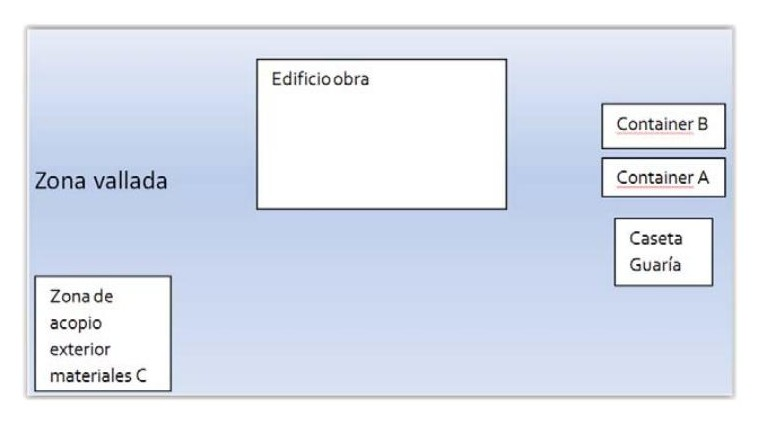
que en no pocas ocasiones deben negociarse las condiciones de ubicación con la contrata principal para encontrar el mejor equilibrio entre nuestras necesidades y el resto de oficios y empresas existentes. En este orden el coordinador de seguridad y salud debe ser consultado en orden a que la organización sea correcta y no produzca peligros o riesgos a la integridad de la obra y el personal de la misma. Téngase en cuenta que la actividad de almacenamiento, sobre todo la asociada a carga y descarga de mercancías es una actividad de alto riesgo dada su siniestralidad laboral que es bastante elevada. De ahí que el almacenamiento de obra en caso de existir varias empresas debe estar coordinado por este agente designado al efecto por el promotor de los trabajos. Es común de hecho encontrarse documentado en los planos y documentos del estudio básico de seguridad y salud, qué zonas están permitidas para almacenamiento incluso que zonas de paso deben respetarse en los distintos momentos de la obra, para evitar que el tráfico interior se convierta en una actividad de riesgo. Para ello se respetarán los anchos de pasos previstos en estos documentos.
Especialmente problemático es también aquellos almacenamientos que se producen en altura dentro de una obra. El almacenamiento en altillos o techos de los containers no está permitido. De requerirse más espacio para el almacenamiento el coordinador de seguridad y salud deberá aportar las soluciones a adoptar para que se cumplan los requisitos necesarios de seguridad para realizar un almacenaje en altura dentro de la zona de acopios de la obra. Entre tanto no haya sido aprobado por éste no debe almacenarse ningún material en altillos, techos de casetas, etc.
2.4. Ficheros de productos, fichero de entradas y salidas
El registro de productos y sus entradas y salidas en un elemento de control indispensable en las obras eléctricas. La rentabilidad de una obra puede depender de este correcto control por lo que es necesario destinar los medios que requerirán los flujos de componentes y su proceso de instalación hasta la puesta final en servicio. Describiremos aquí los registros y la información contenida en ellos que será necesario gestionar durante la ejecución de la obra.
Para la gestión de los almacenes, compras, y posterior instalación de artículos se requerirán ficheros de registro de los mismos así como sus entradas y salidas. Estos ficheros, por lo general serán tablas de datos realizadas en soporte informático. Cada artículo que se va a requerir para la instalación de una obra, tendrá su definición de artículo que contendrá su denominación, características, presentación, etc. El tratamiento digital de estos datos facilitará los cálculos posteriores en cuanto a necesidades de espacio en almacén, elementos de carga y descarga, casetas, etc.
Los campos habituales que contendrá una tabla de definición de artículos/ productos será:
Código: los códigos de artículos son códigos habitualmente numéricos o alfanuméricos que designan de forma unívoca un producto. El código de artículo es un dato identificador, por tanto no puede repetirse entre artículos diferentes, debiendo realizar otro código para cualquier modificación de interés que tenga un artículo. Por ejemplo dos interruptores magnetotérmicos de Intensidades nominales diferentes no deben tener un mismo código, aunque ambos respondan a la misma descripción de interruptor magnetotérmico.
Tipo de artículo: Se emplean los tipos de artículos para agrupar características similares de elementos, por ejemplo en el caso anterior podríamos agrupar diferentes códigos de artículos de interruptores magnetotérmicos todos los tipos e intensidades nominales que tengamos en almacén para permitir por ejemplo búsquedas conjuntas.
Familias de productos: se agrupan por familias aquellos componentes que tienen la misma naturaleza. Por ejemplo podríamos agrupar en una única familia todos los elementos “protecciones eléctricas”. En ella aparecerían todos los interruptores magnetotérmicos, pero también los diferenciales, fusibles, etc.
Clasificación ABC: dado que la clasificación ABC se realiza dentro del alcance de toda la organización y se suele actualizar anualmente, los componentes tendrán una clasificación preestablecida en nuestra organización. Se clasificarán como A aquellos componentes que mayor impacto tienen para nuestra organización y B o C respectivamente al resto, de modo que permitirá así por ejemplo calcular necesidades de espacio para cada tipo de artículo y evitar que mezclen posteriormente dentro del almacén.
Unidad de medida: Cada artículo tendrá la unidad de medida que más se adecúe a sus características. Normalmente serán Ud. (unidades), m (metro), m2 (metro cuadrado), m3 (metro cúbico), Kg, etc.
Otros datos: Otros datos serán requeridos en función de nuestra organización. Pueden afectar datos como:
Lote: el dato lote se requerirá para artículos que posean o requieran trazabilidad.
Definición
Trazabilidad: El término trazabilidad viene de la palabra trazar y en logística se emplea para designar la necesidad de guardar registro de entrada/salida de cada componente asociada lote a lote.
La obligación de trazar depende del componente así como de que este disponga de lote. Si una empresa adquiere una bobina de cable y esta misma bobina es empleada en dos instalaciones diferentes, debe registrarse el lote de adquisición y el empleo en estas dos ubicaciones así como el cliente a que se destinó. De este modo, ante una eventual reclamación por parte de clientes se podrá asociar a una compra concreta de un proveedor. Del mismo modo si un proveedor advierte después de su venta que su producto presentaba defectos podrá ponerlo en conocimiento de sus clientes y nuestra organización a la vez en conocimiento de los suyos. Esta circunstancia puede darse tanto porque el propio proveedor haya detectado el defecto bien como por alguna Administración por incumplimiento de prescripciones o ensayos.
Número de serie: cada vez más componentes incorporan números de serie para el correcto control del elemento. Esto responde a la necesidad del fabricante de proteger el componente contra por ejemplo plagios de materiales, que van en aumento en los últimos años. Por ejemplo se da en el caso de elementos caros como centralitas, sistemas fotovoltaicos, etc. Algunos fabricantes además realizan ensayos de estos elementos de mayor valor a todas sus unidades de modo que pueden relacionar el ensayo o control de calidad del componente exacto cuando salió de las instalaciones del fabricante. Todo componente que incorpora número de serie exige a la empresa instaladora el correcto control de su trazabilidad, manteniendo datos de donde se adquirió y dónde se instaló o vendió incluido fechas, proveedor/cliente, etc.
Caducidad: hay elementos que poseen caducidad y por tanto se requerirá su registro para cada recepción, aunque en el entorno eléctrico la caducidad suele estar relacionada más con la fecha de vencimiento de garantía que con una caducidad propia del componente.
Captura de peso: determinados componentes a granel requerirán captura de peso en todas sus compras. Es el caso de elementos que se paguen por peso como por ejemplo los metales. En este campo del registro de artículos se registrará su necesidad o no para cada compra/recepción del artículo.
Con toda esta información en nuestra base de datos en cuanto artículos podremos prever las necesidades de almacenamiento para una obra concreta, a través del número de unidades a instalar por cada periodo de tiempo y la presentación y por tanto el espacio que ocuparán en nuestro almacén.
Realmente también será necesario conocer el stock medio de cada uno de ellos, dato que calcularemos en el epígrafe siguiente ciclo de compra del material.
Ficheros de entrada:
En general la actividad de logística requerirá de la disposición de bases de datos para su correcto control y gestión. Registro de entrada de mercancías. Por su relación con la actividad de entradas y salidas de material veremos primero los documentos comerciales que entran en juego en las operaciones de compra venta de productos y sus transportes.
La información relativa a estos ficheros debe conservarse durante como mínimo los periodos de garantía que en general serán dos años, pero habitualmente su conservación será mayor, ya que aquellos que están asociados con operaciones contables como facturas se conservarán en general durante 5 años.
Importante
Documentación comercial engloba todos los comprobantes que se extienden por escrito, dejando constancia de las operaciones realizadas en una actividad mercantil.
Los principales documentos son los siguientes:
Oferta
Factura
Remito
Orden de compra/Hoja de pedido
Albarán
Recibo
Cheque
Pagaré
Describiremos ligeramente cada uno de ellos:
Oferta
El término tiene dos acepciones dentro de la logística. En primer lugar se define como la cantidad de bienes o servicios que los productores se disponen a vender a distintos precios. No obstante por oferta también se conoce al presupuesto de un servicio. El presupuesto comprenderá los siguientes elementos:
Datos del cliente, de nuestra organización, fecha y no de presupuesto. Validez de la oferta.
Definición del trabajo de mecanizado: Deben quedar claramente definidas las características del producto y sus especificaciones, pero en la oferta debe emplearse lenguaje sencillo y claro.
Condiciones de entrega del producto.
Estimación del plazo de entrega.
El precio.
Factura
La factura comercial es un documento de tipo mercantil en el que queda reflejada toda la información de una operación de compraventa.
La factura debe tener numeración correlativa para su contabilidad y contener información acerca de la entrega del producto además de la fecha de devengo, indicando la cantidad a pagar por la adquisición de los productos.
También debe contener los datos fiscales de ambas partes y los impuestos devengados.
Tipos de facturas: normal, simplificada, rectificativa, recapitulativa.
Factura normal: son las facturas ordinarias.
Factura simplificada: en algunos casos de operaciones se permiten facturas simplificadas. En ellas no aparecen los datos del cliente. Esto puede darse en algunos casos especiales en que el cliente final no es conocido o en casos autorizados en algunos medios de transporte como puede ocurrir en algunos billetes de tren que permiten incluir a mano los datos del cliente final. En las operaciones ordinarias de compraventa eléctrica no está autorizado para el caso general este tipo de simplificación.
Factura rectificativa: Cuando se producen errores en las facturas no está permitido corregirlas directamente sino que implica que se realizar primero la emisión de una factura rectificativa de características idénticas a la original, pero con concepto negativo (para rectificación de la original) y posteriormente se emita una nueva factura. De este modo cualquier factura que sufra modificación quedaría en contabilidad registrado el caso original, la factura rectificativa y la nueva factura correcta.
Factura recapitulativa: Bastante empleada en la compraventa de materiales de obras, la factura recapitulativa es una factura que se genera de forma periódica (habitualmente mensual) que reúne en una única factura todos los productos servicios durante ese periodo. De este modo todos los materiales servidos por proveedores en un mes natural se encontrarían agrupados en una única factura.
Remito
Es un documento extendido por parte del vendedor en el que se documenta la entrega y/o remisión al cliente de una serie de productos. Por su parte y mediante firma del mismo el recibidor acepta la información del contenido del remito lo que le supone la obligación del pago. Debe contener la información tanto del emisor como del receptor y en general no incluirá precios. El remito debe llevar la leyenda “DOCUMENTO NO VÁLIDO COMO FACTURA”.
Orden de compra/Hoja de pedido
La orden de compra es el documento que se da al proveedor como autorización para la entrega de artículos y su posterior facturación. Deben aparecer
los datos de ambas partes y debe indicar que el documento no es válido como factura. Normalmente incluye el lugar de entrega, o en su caso a quien corresponden los gastos de transporte. En una orden de compra asociada a una oferta concreta, el precio final del material comprado prevalece sobre otro que pueda incorporar por ejemplo el documento de entrega que acompañe al material.
Documentos comerciales
Albarán
Los principales objetivos del albarán son los siguientes:
Para el comprador: comparar con el pedido si la mercancía solicitada es correcta y, básicamente, controlar la mercancía que recibe con la posterior factura. Para el vendedor: al recibir el duplicado firmado por el comprador, tiene una constancia de que ha recibido correctamente la mercancía y, en base a ello, confecciona la factura. Se extiende, como mínimo, por duplicado (original y una copia) y redactando el contenido en una lista de objetos suministrados; aunque suele ser habitual hacerlo por triplicado para que al transportista también le quede constancia de la operación realizada.
Cuando se recibe un envío, puede ocurrir que los géneros recibidos no coincidan con los solicitados, en cuyo caso se procede a su devolución y no se firma la aceptación o conformidad, o se puede rectificar el albarán antes de firmar. Igualmente cualquier incidencia de transporte debe indicarse sobre el documento.
En los albaranes, la cantidad de material recibido y firmado sobre él prevalecerá sobre el número de unidades que reflejara la hoja de pedidos, de ahí la importante de su conteo y comprobación.
Los elementos principales de los que suele estar compuesto un albarán son los siguientes:
Nombre o razón social, NIF/CIF, dirección y otros datos, tanto del vendedor como del cliente.
Numero de orden del albarán y fecha de emisión. Numero de pedido al que corresponde y referencias (si se formuló mediante el representante o agente comercial). Lugar de entrega de la mercancía, si es distinto del que figura en los datos del cliente. Forma de envío: agencia de transporte, nombre del transportista, indicación de si viaja a “portes debidos” o “portes pagados”, número de paquetes o bultos que componen la expedición, fecha de envió y entrega (si el trayecto es superior a una jornada de viaje, etc.), si lleva contra reembolso, etc., entre otros datos relacionados. Descripción de la mercancía: código del producto, cantidad suministrada, descripción del artículo y precio unitario (no se suele incluir el descuento y el importe, salvo que sea un albarán valorado). Observaciones: en este apartado el cliente hará constar las posibles incidencias observadas en la mercancía recibida. Recibí: nombre y firma del cliente o persona autorizado en la empresa receptora. Sirve como aceptación para que el vendedor pueda facturar a carga del comprador.
Recuerda
El albarán es el documento más usado en movimientos de cargas, acompañará a la mayoría de entregas para el control de las mercancías entregadas debiendo extenderse al menos por duplicado y no siendo un documento válido como factura.
Recibo
El recibo es un instrumento de cobro/pago por el que una persona o entidad exige una cantidad de dinero en una fecha determinada. Para poder emitir un recibo contra una cuenta bancaria se requiere una autorización firmada por el titular de la cuenta de manera autógrafa. Los costes dependen del soporte y de la propia entidad financiera, normalmente un porcentaje con un mínimo sobre el importe. Destacar dos tipos: cuaderno 19 AEB y cuaderno 32 AEB, el primero no admite descuento mientras en el segundo puede anticiparse el cobro mediante endoso a la propia entidad.
Cheque
Es un documento de pago/cobro que está autorizado por el emisor y respaldado por una entidad financiera. Este documento está amparado por la Ley cambiaria y del cheque, confiriendo a su legítimo tenedor como acreedor del librado del cheque. Se considera un documento ejecutivo, de manera que ante un posible impago el tenedor tiene la capacidad de actuar de manera judicial contra el librador con la acreditación del impago. Al amparo de la ley el cheque es un documento susceptible de endoso a un tercero.
Pagaré
Es un documento similar al cheque, pero en el que posee una fecha de vencimiento futura. Este tipo de efecto se emplea muy comúnmente en operaciones mercantiles y permite el descuento de los mismos en las entidades financieras. El pagaré refleja una deuda por parte del emisor, la cual está a favor del tenedor, por ello la ley cambiaria establece que estos créditos se pueden transmitir, acción denominada endoso. Tipos: a la orden, nominativos sin clausula, nominativos no a la orden, para abonar en cuenta, cruzados (general o especial)
Ficheros de entrada de productos
Cada operación de recepción debe llevar como hemos visto un documento de entrega que en general será un albarán. Las recepciones se registrarán en un fichero de recepciones para su posterior gestión por parte del departamento de contabilidad y de almacén para la contabilidad de productos y gestión de su almacenaje. En general el fichero de entradas será una tabla de registro en soporte digital que estará relacionada a otras tablas o base de datos existente, de modo que por ejemplo emplee la base de datos de artículos creada para los tipos de artículos y sus formatos a recibir. De hecho la tendencia es a que
existan tablas de registros relacionadas para todos los conceptos de los registros de entrada, de tal modo que para poder recibir un nuevo artículo, ésta haya tenido que ser dado de alta previamente en el fichero de artículos. Esto es igualmente extensible a proveedores, agencias de transporte, etc.
Desde el punto de vista de una recepción pueden darse dos casos:
Recepción ciega. Esta se da cuando recepcionamos un material del que no disponemos formalmente de una orden de compra/hoja de pedido en papel sobra la que contrastar el ajuste entre el material recibido y el solicitado. Sobre una recepción ciega no podremos realizar una previsión de recepción previa, pues no conocemos su contenido exacto. Este caso debe ser tratado con especial cuidado en la recepción y ser meticuloso en la correcta redacción del albarán previo a su aceptación.
Recepción sobre orden de compra: es la más habitual ya que en pedidos para instalaciones el hecho de redacción de órdenes de compra es más acorde a la importancia de las operaciones. Al existir una previsión de recepción pueden éstas rellenarse previamente en el fichero, de modo que la actividad de recepción se simplifica pues supone tan sólo un chequeo comprobación de datos y sólo será necesario rellenar datos secundarios como lotes, caducidad, etc.
Fases de recepción
Recepción
Recepción
Envío a ubicación
ciega
stock
Recepción con orden de
Creación de previsión de
Recepción de
Envío de ubicación
stock
compra
recepción
En cuanto a los campos de un fichero de recepción son habituales los siguientes:
Código: será un código identificador único de la recepción. Normalmente será un código alfanumérico que debe reconocer inequívocamente cada recepción unitaria diferenciándola de otra. Nótese que es necesario a efectos de trazabilidad por ejemplo el registro de fechas de recepción de cada lote, de ahí que además del código de los artículos deba asociarse a códigos únicos de recepción.
Tipo: Ciega o asociada al código de una orden de compra.
Proveedor: datos de la persona física o jurídica que realiza el envío. En muchas organizaciones el proveedor no será de libre elección, sino que al igual que los artículos debe poseer un alta en un fichero de proveedores aceptados y a partir de él se podrá realizar pedidos al mismo.
Agencia: Dada la importancia relativa que poseen las agencias de transporte y a los posibles daños que pueden sobre el material recibirse durante la operación de transporte, el registro de la agencia de transporte asociada a la recepción de un material es un dato obligado.
Detalles de la recepción: unidades, artículos, caducidad, números de series, etc.
Formatos de recepción: Desde el punto de vista de los formatos de una recepción pueden distinguirse estos casos:
Stock suelto sin contenedor: según este tipo de recepción los artículos vendrían sueltos en unidades, y se ubicarían directamente en una localización (Loc 01 x1, y1, etc.). Esto supone que una localización tendría varios artículos y no permitiría al sistema distinguir una organización dentro de la localización.
Stock en contenedor: Tanto si el contenedor proviene del transporte como si es interno, el hecho de recepción en contenedor permitirá mediante un identificador del contenedor asociar artículos a contenedores concretos. Si en una misma localización se emplean por ejemplo diversas eurocajas identificadas, permitirá una mejor subdivisión de la localización a través de estos contenedores. El caso stock en contenedor prevé un único tipo de artículo en cada contenedor, pero pueden existir varios contenedores en una única localización.
Múltiples contenedores/Múltiples artículos: es un caso similar al anterior, solo que en este caso sí se permite que los contenedores contengan artículos diferentes.
Ficheros de salidas:
Desde el punto de vista de ficheros, los ficheros de salida son similares a los de recepción. Su documentación y los campos a aplicar dependerán de cada organización. Dentro del control en obra lo habitual sería realizar un documento de salida diario con los materiales requerido por cada responsable de la organización debiendo firmarse y almacenarse para su control del mismo modo
que se realizó en la recepción con las excepciones hechas de agencias de transporte, etc.
El registro de salida vuelve igualmente a ser relevante en caso de materiales que requieren trazabilidad.
Los registros de salidas como los de entrada dispondrán de una numeración única diferente de los registros de entrada y se conservarán durante el tiempo necesario, al menos dos años, aunque será recomendable que se extienda por más tiempo. Si se trabaja con elementos con trazabilidad o con caducidades superiores es conveniente que se extienda al menos a cinco años con objeto de tener mejor control sobre el momento de instalación de los equipos y el tiempo transcurrido en el interior de almacenes. Habitualmente si los ficheros de entrada salida están disponibles en ficheros digitales lo lógico es una conservación indefinida de los mismos.
Containers almacenados.
2.5. Ciclos de compra del material
Los ciclos de pedidos de materiales resultan un factor estratégico dentro de la gestión de almacenes y obras de instalación eléctrica. Inicialmente definiremos el ciclo de pedido como:
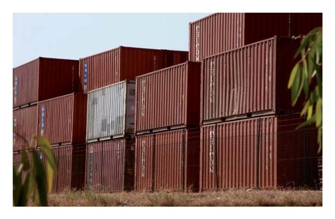
Definición
Ciclo de compra de materiales: es el periodo de tiempo que transcurre entre la compra de un artículo y su siguiente compra.
Nótese que guarde relación directa con otro concepto relacionado que es el Volumen de pedido.
Volumen de pedido: número de unidades que solicitamos con cada compra para un determinado artículo.
Los volúmenes de pedido y los ciclos de pedidos son dos variables de decisión dentro de la gestión de almacenes para una obra (o varias). Las mismas se representan habitualmente en representaciones gráficas con eje de abscisas la escala temporal y eje de ordenadas la cantidad existente en almacén en el instante t.
Representación de esquema V/t
En el esquema anterior se muestra un caso sencillo de ciclo de pedido. Inicialmente se dispone de 10 unidades del artículo 1 en el almacén. Se van gastando unidades a razón de 10 unidades por semana. En el instante en que se gastan se vuelven a pedir 10 unidades de producto que se almacenan para tener disponibles en la siguiente semana. En este gráfico el ciclo de pedido de material es de 1 semana y el volumen de pedido V es de 10 unidades. La inclinación de la recta será por tanto el gasto semanal:
Ecuación de la recta:
Pero las preguntas que nos hacemos a continuación sería:
¿Por qué no pedir 20 unidades cada 2 semanas ó 30 unidades cada 3 semanas?
¿Cuál es el ciclo de pedido y volumen de pedido óptimo para cada caso?
A estas preguntas hay que añadir la complejidad de otras cuestiones como son el hecho de que en la realidad las necesidades de un material no son las mismas de un periodo de tiempo a otro. Por tanto si linealizamos estas necesidades como en el caso anterior las optimizaciones deberán realizarse en diferentes periodos discretos.
En esta sección vamos a ver posibles aproximaciones a la optimización del almacenamiento para tratar de estimar estos valores de pedido que a su vez nos deben servir para planificar la cantidad de almacenamiento que requeriremos para la ejecución de una obra concreta.
Por tanto partimos de los siguientes principios:
Podemos definir el stock o existencias como los artículos en espera de su utilización posterior.
El stock debe garantizar el correcto funcionamiento de la organización.
El hecho de su existencia exige una optimización y control.
Una pequeña reducción en el nivel de inventario puede repercutir en un aumento de beneficios apreciables.
Previamente al cálculo de definiremos algunos conceptos relacionados con los niveles de existencias:
Stock máximo: Se refiera a la mayor cantidad de existencias que se pueden almacenar en un momento puntual. Interesa que sea grande cuando: los costos de almacén son bajos, se obtienen importantes descuentos por volumen cuestión interesante cuando se esperan incrementos de demanda, se esperan subidas de precio de suministro.
Obsérvese que el stock máximo puede definirse para un determinado artículo, para una suma de artículos, para un espacio, y que también puede ser variable según el momento. En ocasiones el stock máximo se convierte en un valor estratégico pues posibilita realizar grandes pedidos si las condiciones son propicias para ello.
Stock óptimo: Es el equilibrio que compatibiliza una adecuada atención del servicio a la vez que rentabiliza en lo posible los costes de almacenamientos en niveles de inversión moderados. Como tal el óptimo en problemas tan complejos no puede considerarse un valor único sino más bien una combinación de valores que acercan a este valor óptimo.
Stock de seguridad: Pretende compensar errores de cálculo en demanda, defectos, averías, etc. Son unidades de más que se procuran tener en los almacenes para absorber las diferencias que se han calculado con la realidad.
Stock mínimo: Es la menor cantidad que puede existir en almacén y que permita satisfacer la demanda sin rotura de stock. Depende del momento en que se formula. Por ejemplo puede ser el número de piezas totales que se requiere para cubrir el tiempo de envío que tiene un nuevo lote desde que se pide el siguiente. Imaginemos que tenemos cable para una semana, y que una semana es lo que tarda el proveedor en reponer un lote desde su almacén hasta nuestra obra. Estaríamos en situación de stock mínimo durante todos los días de la semana, aunque la cantidad en stock está variando cada día.
Recuerda
Stock óptimo es el nivel deseable de existencias que logra cubrir el servicio completamente sin rupturas, pero permita mantener los gastos más moderados posibles en cuanto a coste de almacenamiento y gestión de stock de los productos.
Costes asociados al almacenamiento:
Distinguiremos dos tipos de costes:
Coste de incorporaciones: se emplean para calcular el coste de cada artículo incluido el transporte desde el proveedor hasta nuestro almacén, gastos de gestión del pedido, etc.
Coste de espera: Es el coste que nos produce en función del tiempo el hecho de tener un determinado artículo en el almacén. Nótese que los costes de espera están formados por muchos términos, desde el coste del propio almacén, como de la mano de obra de mantenimiento del mismo, incluso el coste financiero en que incurrimos por haber hecho el desembolso de compra del artículo.
Optimización de cantidad de pedido
La optimización de la cantidad de pedido viene dada por el equilibrio entre el coste que tiene almacenar un producto en el almacén y el coste de gestión en que incurrimos cada vez que realizamos un pedido. Ambos son difíciles de determinar para un caso puntual, pero pueden estimarse en periodos largos como suma de costes de cada tipo divididos el primero entre el número de unidades que almacenamos en nuestro almacén y el segundo entre el número de pedidos que se gestiones.
Costes fijos de realizar un pedido (k)
Cada vez que realizamos un pedido de materiales incurrimos en una serie de gastos como son la propia gestión de realizar la orden de compra, aprobación, envío, gastos asociados al transporte de la partida si van a nuestro cargo, actividad de recepción y ubicación, etc. Si imputamos todos los costes de gestión del pedido y lo dividimos por el número de pedidos en un plazo largo obtendremos de forma aproximada el valor de coste fijo de realizar un pedido expresado en €.
Costes de almacenamiento (g)
El hecho de tener que tener una disponibilidad en almacén para los artículos en stock producirá costes fijos del tipo: alquiler de almacenes, inversión en estanterías, mano de obra de gestión de conteos y mantenimiento de almacenes, etc. Si estimamos imputamos los costes de almacenamiento en un periodo determinado (T) que puede ser un año o la duración de una obra por
ejemplo y lo dividimos por el stock medio de Ud. que se han tenido almacenados o se prevén almacenar obtendremos el costo de almacenamiento en €/Ud. para el periodo T.
Cabe destacar que los costes anteriores no son perfectamente lineales, pero dentro de un entorno más o menos homogéneo de pedidos si se compartirán de modo aproximadamente lineal.
En primera aproximación suele emplearse el modelo de Wilson para la optimización de los volúmenes de pedido que es una aproximación lineal al óptimo también conocida como EQQ cantidad económica de pedido (Economic Order Quantity). El modelo de Wilson prevé las siguientes hipótesis:
La demanda es conocida, constante e independiente. En general se trabaja con unidades de tiempo anuales pero el modelo puede aplicarse a otras unidades de tiempo como por ejemplo a la cantidad total de unidades y tiempo que vamos a requerir para una obra o varias en un periodo de tiempo.
El tiempo de reabastecimiento del pedido por parte del proveedor es constante y conocido. Esto quiere decir que conocemos cuándo debemos hacer el pedido para logar que el inventario se pueda reabastece instantáneamente cuando llega a cero con la llegada del lote pedido.
No existen descuentos por volumen de pedido.
Importante
El modelo de Wilson es un método para el cálculo simplificado del número y cantidad de pedidos óptimos de un artículo. Matemáticamente igualara en un periodo de tiempo los costes de realizar un pedido con los costes de almacenamiento en dicho periodo.
Trataremos de determinar en un periodo T (que puede ser el total de una obra, un año, etc.) la cantidad de pedido recomendada para cada lote (V) expresado en Ud. a solicitar. Para ello deberemos calcular en la mejor aproximación lineal posible los costes totales del hecho de realizar un pedido expresado en € (k), así como el coste de almacenamiento (g).
V= número de Ud. a solicitar en cada pedido.
q= número de Ud. de que se necesitan en el periodo T.
k=coste fijo de realización de un pedido (€).
g= coste de almacenamiento en €/Ud. para el periodo T.
n=número de pedidos en el periodo T.
S= stock medio.
Ss= stock de seguridad.
Para nuestro supuesto se cumplirá que:
Stock medio en modelo de Wilson
S= V/2
Gráficamente sería:
Stock medio en modelo de Wilson
Para la optimización de la cantidad de pedido el modelo de Wilson indica que el óptimo cumplirá con:
Ecuación de optimización modelo de Wilson
Para el número de pedidos tendremos:
Ecuación número de pedidos
n= q/V
Si tenemos costes de almacenamiento bajos y costes de gestión de pedidos altos el tamaño óptimo de nuestro almacenamiento resultará obviamente alto, mientras que en aquellos casos en que la gestión del pedido se realice con costes bajos mientras el coste de almacenamiento sea alto el tamaño de nuestro almacenamiento será bajo.
Debe también advertirse que en sí, la actividad de almacenamiento no añade valor a los productos, mientras que sí produce gastos: Maquinaria e instalaciones, obsolescencia, inmovilizado capital, recursos humanos, costes financieros, costes de gestión y control, operaciones de manutención, etc.
Por este motivo las empresas consideran el stock un mal necesario, y la tendencia actual es a minimizar el nivel de existencias.
Durante mucho tiempo la política común en las empresas era tener sus almacenes repletos de existencias con el fin de resolver problemas tales como demandas imprevistas, huelgas, averías...Se consideraba un que una empresa con grandes cantidades de stocks era altamente eficiente por su capacidad de prestar un buen servicio a sus clientes.
A partir de los años 70, se observó que aquellas empresas que gestionaban sus existencias habían afrontado ciertas crisis industriales mucho mejor que aquellas que no lo habían hecho. Desde entonces, se empezó a considerar que los stocks eran necesarios, pero que también era necesaria una gestión eficiente del inventario tendente a determinar su tamaño adecuado con el fin de optimizar costes.
Un nivel bajo de inventario: puede ocasionar constantes interrupciones en el sistema de fabricación o continuas desatenciones de la demanda de los clientes. Un nivel alto de inventario: lleva consigo altos costes que pueden arruinar el margen de ganancia del negocio.
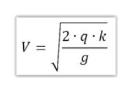
Hoy en día, en amplios sectores empresariales se considera que tener stock es un signo de ineficiencia del sistema productivo, y que la situación ideal es la eliminación total de los stocks. Esto es lo que se conoce como gestión con stock cero, que está en relación con la filosofía empresarial de producir justo a tiempo (JIT-Just in time)
Los sistemas JIT no obstante requieren una serie de modificaciones en la organización para evitar las temidas roturas de stock.
Costes de ruptura o escasez (shortage cost): Son los costes que se producen por insuficiencia de materiales en almacén con respecto a la demanda esperada en la producción de una obra o instalación.
Son los más difíciles de calcular, pues incluye aspectos de difícil cálculo, como mano de obras despilfarrada, retraso en certificaciones de obra, insatisfacción futura de clientes, etc.
Just in time: Literalmente “justo a tiempo”.
Es una filosofía de fabricación en el que la meta es eliminar acciones innecesarias, esto es emplear el mínimo de recursos de almacenamiento. Su aplicación requiere modificaciones importantes a los métodos tradicionales. Se requerirán proveedores preferentes, se articularán arreglos contractuales especiales para pedidos pequeños, pactando globales anuales, calidades, etc. Se intenta eliminar el QC entrada y reducir los costes de gestión de pedidos al mínimo. El tiempo de llegada es de extrema importancia.
Recuerda
Just in time (JIT): Filosofía por la cual tiende a reducirse al mínimo la cantidad de stock necesario en nuestra organización.
Por tanto el JIT conllevará:
Reducir los niveles de inventario.
Minimiza las pérdidas por causa de suministros obsoletos.
Exige una relación cercana con proveedores.
Pactos contractuales en cantidades y entregas, tiempo, transporte...
El sistema es más flexible y permita cambios en menor tiempo.
Excepciones: Existen casos en los que es de gran interés disponer de una capacidad de almacenamiento grande. Ejemplo de ello son los siguientes casos:
Tendencia inflacionista de las materias primas:
En aquellos casos en que se conoce que la materia prima aumentará de precio de forma importante y siempre que los productos lo permitan puede darse una oportunidad de mejora de beneficios a través del almacenamiento. Esto ocurre con bastante asiduidad en el caso de los cables y su decencia con el precio del cobre. Para una empresa instaladora puede resultar realmente interesante realizar un acopio de cable importante ante una subida de su precio. Cuanta más cantidad haya podido acumular mayor ventaja comercial podrá aplicar a concursos posteriores con respecto a su competencia.
No obstante existen riesgos por supuesto, bien porque la subida final no sea la esperada y termine por no compensarse con otros gastos como el financiero o el coste de almacenamiento general, bien por el riesgo de sufrir deterioros y/o obsolescencia de los bienes almacenados.
Aplicación de economía de escala:
En ocasiones la compra de material en grandes cantidades puede suponer suficiente ventaja comercial y pueden pactarse constes financieros más ventajosos, de modo que en ocasiones pueden llegar a compensar o superar las ventajas de un gran almacenamiento respecto a la compra lote a lote.
Esto tiende a ocurrir actualmente en el comercio internacional con transporte naval. Dado los bajos costes actuales de algunos países fabricantes unidos a la reducción de costes gracias a las líneas regulares para los containers que viajan en barco puede llegar a resultar de interés disponer de almacenes de cierta talla que permitan realizar grandes compras desde países fabricantes.
Recuerda
La tendencia actual en gestión de inventarios es a minimizar en lo posible el nivel de existencias, sin embargo no pocas empresas mantienen la capacidad de almacenamiento estratégica para salvaguardarse de la inflación o poder realizar compras a gran escala.
Costes de transporte:
El transporte es por excelencia uno de los procesos fundamentales de la estrategia logística.
Es de atención prioritaria, ya que suele ser el elemento individual de mayor ponderación de costos logísticos en la mayoría de empresas. Se ha llegado a calcular que en la mayoría de casos los suministros que compramos pueden llegar a suponer entre 1/3 y 2/3 de su coste total los distintos transportes que han realizado hasta llegar a nuestras manos.
La aplicación de economía de escala en productos en los que el transporte supone un importante índice de coste en el producto, disponer de un almacenamiento grande puede constituir una ventaja comercial. Por su vinculación con el porcentaje de costes de incorporaciones de productos veremos someramente los distintos medios de transporte empleados en los movimientos de mercancías:
Opciones del servicio de transporte:
Terrestre:
La masificación de grandes fabricantes de automotores ha impulsado desde el siglo XX el transporte terrestre. Es el más empleado en productos acabados y la mayoría de semielaborados. Poseen el menor coste de todos, por emplear vías públicas, con costes fijos muy bajos. Los medios terrestres suelen ser: Camión trailer, camión de plataforma abierta, camión tanque, camión de reparto, etc. La longitud promedio ha alcanzado el promedio de 1150 Km entre origen y destino. Su gran limitación se encuentra en los tamaños de envíos.
Las grandes ventajas del transporte terrestre son su capacidad de brindar servicio puerta a puerta, su frecuencia, disponibilidad y velocidad.
Férreo
El medio férreo es un sistema de largas distancias a baja velocidad usado de manera regular para el transporte de materias primas (Combustibles, mineral, carbón, madera, cereales, químicos, etc.) y productos manufacturados de bajo coste y gran volumen o cantidad como por ejemplo papel.
En España es un medio relativamente limitado a zonas tradicionalmente industriales o mineras.
El coste es medio o bajo y aunque goza de menores limitaciones de tamaño y peso está limitado a la existencia de infraestructuras.
Marítimo
El transporte marítimo es por excelencia el principal medio de transporte en el ámbito del comercio internacional de grandes cantidades. Su uso es sumamente frecuente en mercados de reposición no urgente, dado que es regularmente empleado en largas distancias y grandes cantidades. Su resurgimiento en el comercio internacional se debe al nuevo panorama de consumo mundial así como al gran éxito de adaptación a otros medios de transporte gracias a la globalización del contenedor. Los tiempos de carga y descarga marítima y su modularidad de aplicación directa a medios de transporte férreo o terrestre han producido un gran auge. El crecimiento de líneas regulares marítimas con países fabricantes con bajos costes de mano de obra ha supuesto una revolución en el panorama internacional y los costes del transporte con estos países han dado lugar a paradojas tales como que transportar un container desde china o Brasil resulte más económico que el transporte de el mismo container desde países de Europa situados a apenas 1000 ó 2000 km. Esto se produce gracias a la gran economía de escala aplicable al transporte marítimo que no ocurre con otros medios como el transporte terrestre.
Transporte marítimo de containers.
Aéreo
El transporte aéreo también ha evolucionado drásticamente en los últimos años reduciendo sus precios y aumentando su regularidad de servicio. No obstante y pese a esta mejora, continúa siendo el más caro y el más limitado, aunque para determinados casos de producto de gran valor sustituye al transporte marítimo por su velocidad. Ejemplo: oro, plata, repuestos, piezas o recambios de importancia, etc. Por si solo únicamente tienen importancia en la larga distancia dado que lo habitual es que se realice en combinación con el terrestre. Su economía de escala afecta más a la regularidad que al volumen/peso del transporte, por lo que su uso se restringe a necesidades muy concretas.
Objetivos del almacenamiento
El objetivo del almacenamiento desde el punto de vista de la manipulación es evitar cualquier interrupción en la demanda produciendo los mínimos costes.
Para ello, una vez calculadas las necesidades globales de nuestra organización para una o diversas obras o un periodo de trabajo determinado, deben estimarse los valores de unidades que va a requerir la organización.
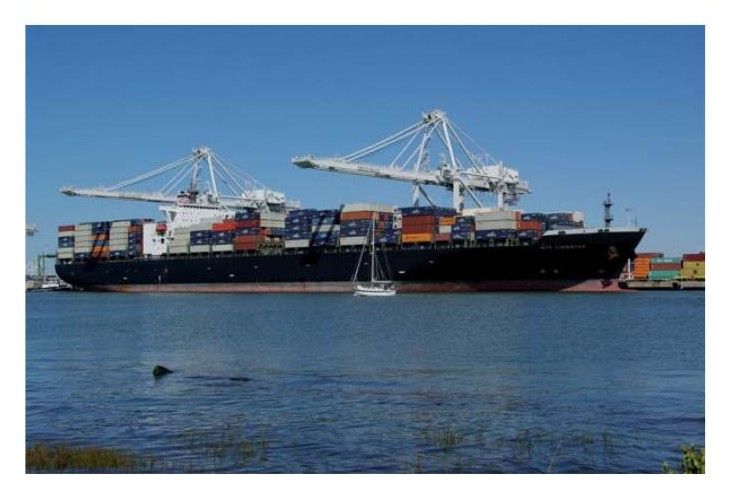
Tipos de demanda de un artículo:
Otro dato que debe tenerse en cuenta a la hora del cálculo de los ciclos de pedidos son los tipos de demanda de cada artículos para seleccioner en qué peridos disctros deben dividirse los tiempos en que realizamos los cálculos de cada tipo de demanda (T). Atendiendo al tipo de demanda de un artículo podemos encontrarnos los siguientes casos:
Demanda Irregular: Es la típica demanda de artículos que se dan en función de las obras que tengamos en ejecución. Podemos incluir aquí todos aquellos elementos más comunes de obras de edificación, dispositivos, cajas de conexiones, bandejas, etc. que ven incrementada su demanda en determinados momentos de obra de forma muy acusada, pero que el resto del tiempo pueden tener demanda cero o muy próxima a cero.
Demanda con término: Se da para productos de alta exclusividad, aquellos que pueden requerirse en cantidades importantes o unitarias pero de alto valor para determinadas obras de instalacion, pero que finalizadas éstas es poco probable que puedan volver a darse. Ejemplo de ello puede ser modelos exclusivos de luminiarias, o una centralita de automatización, etc.
Demanda estacional: Es la demanda que depende de momentos del año. Ejemplo de ello puede ser por ejemplo los equipos de aire acondicionado, que sufren una fuerte demanda en los meses de primavera verano y descienden fuertemente su demanda en el resto de meses, de modo que disponer de un stock grande a principios de otoño puede suponer un gran riesgo comercial, tanto porque puedan disparase sus costes de espera como porque puedan quedar obsoletos respecto a equipos que se lancen en la temporada siguiente y por tanto con el riesgo de que nuestro stock pierda valor ante la próxima vez que se requiera.
Demanda perpetua: Son aquellos elementos que por su continuidad en el tiempo puede considerarse que su demanda es ilimitada, o al menos lo es en el orden de magnitud de tiempo en que nos movemos normalmente en el almacenamiento. Ejemplo de ello pueden ser los cables de asilante y secciones más comunes, como por ejemplo pueda ser cable de 2,5 mm2 de aislante termoestable. El hecho de que nos pudiera sobrar cable de este tipo al final de una intervención concreta no suele suponer un gran problema puesto que este material casi con total seguridad se seguirá requiriendo en otras obras o trabajos que tengamos. Puede darse el riesgo de que por ejemplo aparecza una nueva tecnología más económica que deje obsoleto el material, sin embargo, ya que esto no es algo que ocurra habitualmente su demanda puede considerarse perpetua.
Importante
Los distintos tipos de demanda de un producto obligan a realizar los cálculos de los parámetros óptimos en periodos de tiempo discretos.
Tipos de demanda
Evidentemente los tipos de demanda deben preverse con antelación, por lo que siempre existirá una determinada incertidumbre en el cálculo de necesidades futuras. Para absorber este tipo de coyunturas que no son calculables por métodos deterministas se suele prever un stock de seguridad, que será un número de unidades extra a almacenar con objeto de atender imprevistos como retrasos en pedidos, averías, huelgas, etc.
Stock de seguridad (Ss): Es aquel stock de reserva que se incrementa sobre el stock de cálculo con objeto de absorber los imprevistos que puedan surgir durante la ejecución de una obra o instalación.
Dado que el stock de seguridad pretende absorber imprevistos su determinación no puede responder a cálculos deterministas, sino que obedece a leyes probabilísticas. Por ende resultará de complejo cálculo, por lo que en general tiende a ser decisiones a tomar en función de la importancia de la ausencia del mismo, es decir, se deciden en función de los costes de escasez que provocaría su ausencia. Es lógico que el coste de ausencia de cable puede resultar de gran coste por lo que tiende a disponerse de un stock de seguridad holgado, mientras otros componentes como interruptores o fusibles permiten cierta demora en su instalación sin suponer costes excesivos por lo que tienen a solicitarse de forma más determinista.
Gráficamente el stock de seguridad resultaría:
Stock de seguridad
Recuerda
El cálculo del stock de seguridad implica siempre un estudio probabilístico pues su la motivación de su necesidad siempre es de origen imprevisto.
2.6. Hojas de entrega de materiales: especificaciones de compras
Los materiales empleados en instalaciones eléctricas deben responder a una lista de especificaciones obligatorias mínimas y disponer de hojas de especificaciones así como ensayos y normas que el fabricante certifica que cumplen. Estas hojas deben estar disponibles para los clientes y deben servir de garantías sobre el material. En caso de la unión europea, los materiales eléctricos están considerados dentro de la lista de materiales de marcado CE y es no poca la normativa que le afecta. Algunas de las directivas que podrían ser de aplicación en función del producto pueden ser:
Baja tensión (LVD)
Compatibilidad Electromagnética (EMC)
Productos de Construcción
Restricción uso de sustancias peligrosas en aparatos eléctricos y electrodomésticos (ROHS)
Indicación del consumo de energía y otros recursos por parte de los productos relacionados con la energía, mediante el etiquetado y una información normalizada (ErP)
Requisitos de diseño ecológico aplicables a los productos relacionados con la energía (ErP)
Etc....
Este tipo de directivas y sus diferentes transposiciones en España generó exigencias para los fabricantes de material eléctrico y prohibió la comercialización europea de todos los productos que no cumplieran estas prescripciones cuya generalidad debe cumplir:
Real Decreto 7/1988, de 8 de enero, relativo a las exigencias de seguridad del material eléctrico destinado a ser utilizado en determinados límites de tensión.
Art. 5.o..”Se prohíbe la comercialización en el mercado interior, su importación procedente de la CEE y la instalación en cualquier parte del territorio nacional de los materiales eléctricos que no cumplan las prescripciones del artículo 2.o..”
Por tanto todo el material eléctrico debe adaptarse a la normativa europea para poder ser comercializado en España. Cumpliendo los criterios de seguridad de las normas generalmente UNE-EN-xx
...Art. 2.o
Los materiales a que se hace referencia en el artículo 1.o deben construirse de acuerdo con los criterios técnicos vigentes en materia de seguridad en la Comunidad Económica Europea, de manera que no pongan en peligro, cuando su instalación y mantenimiento sean los correctos y su utilización responda a la finalidad a la que estén destinados, la seguridad de las personas y de los animales domésticos, así como la de los bienes, a cuyo fin deberán cumplir como mínimo con las reglas y condiciones establecidas en el artículo 3.o
Si deseas ampliar información, puedes consultar en internet Real
Decreto 7/1988
Tipos de cables
Por su importancia relativa veremos algunas características de los cables eléctricos y normas UNE de aplicación.
Designaciones, tipos de cable y aplicaciones:
Partes de un cable
Tensión nominal
Comportamiento ante el fuego
Un cable es un conjunto constituido por uno o varios conductores aislados y sus eventuales revestimientos (cubierta, pantalla, armadura, etc.)
Definición
Conductor: Parte de un cable que tiene la función específica de conducir corriente.
Sección: La intensidad de corriente que puede circular por un conductor depende de su sección transversal. A mayor sección mayor intensidad admisible (mayor capacidad para el paso de la corriente).
Las secciones de conductor no están sujetas a medida directa con un calibre. A cada sección eléctrica (1,5; 2,5; 4...) le corresponde un valor de resistencia máxima indicado en UNE EN 60228.
Las secciones disponibles de conductor están normalizadas siguiendo la siguiente serie:
Secciones normalizadas
x 0,2 0,4 0,6 0,8 1 1,2 1,4
10x 1,5849 2,5119 3,9811 6,3096 10,0000 15,8489 25,1189
Sección normalizada
1,5 2,5 4 6 10 16 25
(mm2)
Las secciones restantes siguen otro criterio distinto: 35, 50, 70, 95, 120, 150, 185, 240, 300, etc.
Flexibilidad (UNE EN 60228): Los conductores están formados por hilos de diferentes diámetros según la flexibilidad requerida:
Clase 1: rígido (hilo único) S ≤ 4 mm2 (habitualmente)
Clase 2: rígido (varios hilos) S > 4 mm2 (habitualmente)
Clase 5: flexible Todas las secciones
No existen las clases 3 ni 4. La clase 6 es comúnmente llamada “extraflexible” y está destinada a aplicaciones especiales. Los cables rígidos y los flexibles tienen las mismas intensidades admisibles para las mismas secciones.
Definición
Aislamiento: Conjunto de materiales aislantes (conductividad prácticamente nula) cuya función específica es soportar la tensión.
Tipos de aislamiento más frecuentes:
Z1: poliolefinas tipo Afumex® (libres de halógenos)
XLPE: polietileno reticulado
PVC: policloruro de vinilo
EPR: etileno propileno
Identificación de los aislamientos (UNE 21089-1)
Para los cables de fase se emplearán: negro, gris y marrón. Para el neutro azul y para la protección de tierra amarillo y raya verde. Los cables unipolares con cubierta no tienen diferentes coloraciones de aislamiento asignadas. Debe identificarlos el instalador con señalizadores en la cubierta (GUIA-BT 19).
Definición
Cubierta: Revestimiento tubular continuo y uniforme fin es proteger mecánicamente el cable.
Tipos de cubierta más frecuentes:
Z1: poliolefinas Afumex® (libres de halógenos)
PVC: policloruro de vinilo
Goma: policloropreno (PCP) o similares
Pantalla: Revestimiento destinado a asegurar compatibilidad electromagnética (evitar interferencias internas o externas)
Tipos de pantallas más frecuentes:
De cobre: cintas y/o malla
De aluminio: cintas
La cobertura de las pantallas con malla de cobre debe ser del 60 % como mínimo por norma.
Definición
Armadura: Parte de un cable pensada principalmente para dotarlo de mayor protección mecánica.
Tipos de armadura más frecuentes:
De corona de hilos de acero La mejor protección mecánica (ITC-BT 29, zonas ATEX), flexibilidad y resistencia a la tracción
De flejes de acero: Buena protección mecánica
De fleje de acero corrugado: Buena protección mecánica y flexibilidad
De trenza de hilos de acero: Máxima flexibilidad
Para cables unipolares las armaduras han de ser de aluminio.
Especificación de tensión asignada: Tensión nominal de un cable (Uo/U)
Uo: valor eficaz de la tensión nominal y entre un conductor aislado y tierra (tensión simple). Es decir, es la tensión asignada a un único conductor en virtud de su aislamiento externo.
U: valor eficaz de la tensión nominal entre dos conductores aislados para los que se ha diseñado un cable (tensión compuesta). Es decir, es el valor de tensión asignada entre un conductor y otro conductor a través de sus respectivos aislamientos.
Los cables se designan por un conjunto de caracteres que informan abreviadamente de la composición y estructura del cable en general. Los cables de 0,6/1 kV no están armonizados, es decir no les es de aplicación la UNE 20434 aunque hay similitudes. Los cables eléctricos aislados de tensión asignada hasta 450/750 V se designan según las especificaciones de la norma UNE 20434.
Comportamiento ante el fuego:
En locales de pública concurrencia, o zonas donde se prevean situaciones de incendio con riesgos no despreciables, los cables deberán cumplir normativa específica en relación con su comportamiento ante el fuego según se pueden exigir las siguientes características los cables cumplirán con:
No propagación de la llama: UNE EN 60332-1-2
No propagación del incendio: UNE EN 60332-3-24
Baja emisión de humos opacos: UNE EN 61034-2
Libre de halógenos: UNE EN 50267-2-1
Nula corrosividad de humos: UNE EN 50267-2-2
Resistencia al fuego: UNE EN 50200
Características de otros elementos eléctricos de la instalación. Protección por barreras o envolventes – Índices de Protección IP (UNE 20324)
El grado de protección IP, se emplea para clasificación de elementos según la protección que ofrecen contra posibles contactos de elementos externos con sus partes en tensión. Se emplean para la mayoría de componentes eléctricos como cajas de conexión, terminales, etc.
Consta del índice IP seguido de dos dígitos, pudiendo incorporar adicionalmente una o dos letras más. Sus significados son los siguientes:
Primera cifra – Protección contra cuerpos sólidos (cifras 0 a 6, o letra x)
Segunda cifra – Protección contra cuerpos líquidos (cifras 0 a 8, o letra x)
Letra adicional (opcional) (letras A, B, C, D) Protección contra el acceso a partes peligrosas con: A – dorso de la mano. B – dedo. C – herramienta. D – alambre.
Letra suplementaria (opcional) (letras H, V, S, W) Información suplementaria específica de: H – material de alta tensión. M – movimiento durante el ensayo de agua. S -inmóvil durante el ensayo de agua. W – intemperie.
La existencia de una letra x en los dos primeros dígitos significaría que el fabricante no ha ensayado ese equipo ante cuerpo sólido o líquido respectivamente.
Ejemplo:
Caja de conexiones con índice IP x2. Significaría que cumple con la exigencia de nivel 2 para protección contra cuerpos líquidos y su protección contra cuerpos sólidos es desconocida o no ha sido suministrada para ese componente.
Escalas de protección de los índices IP:
Primer dígito de índice IP
Tamaño del objeto
Nivel
Efectivo contra
entrante
0 — Sin protección
El elemento que debe utilizarse para la prueba (esfera de 50fimm de diámetro) no debe llegar a entrar por completo.
1 <50fimm
El elemento que debe utilizarse para la prueba (esfera de 12,5fimm de diámetro) no debe llegar a entrar por completo.
2 <12.5fimm
El elemento que debe utilizarse para la prueba (esfera de 2,5fimm de diámetro) no debe entrar en lo más mínimo.
3 <2.5fimm
El elemento que debe utilizarse para la prueba (esfera de 1fimm de diámetro) no debe entrar en lo más mínimo.
4 <1fimm
La entrada de polvo no puede evitarse, pero el mismo no debe entrar en una cantidad tal que interfiera con el correcto funcionamiento del equipamiento.
5 Protección contra polvo
Protección fuerte contra
6
El polvo no debe entrar bajo ninguna circunstancia
polvo
Segundo dígito IP
Nivel Protección
frente a Resultados
0 Sin protección. El agua entrará en el equipamiento en poco tiempo.
No debe entrar el agua cuando se la deja caer, desde 200fimm de altura respecto del equipo, durante 10 minutos (a razón de 3-5fimm3 por minuto)
1 Goteo de agua
No debe entrar el agua cuando de la deja caer, durante 10 minutos (a razón de 3-5fimm3 por minuto). Dicha prueba se realizará cuatro veces a razón de una por cada giro de 15° tanto en sentido vertical como horizontal, partiendo cada vez de la posición normal de trabajo.
2 Goteo de agua
No debe entrar el agua nebulizada en un ángulo de hasta 60° a derecha e izquierda de la vertical a un promedio de 11 litros por minuto y a una presión de 80-100kN/m2 durante un tiempo que no sea menor a 5 minutos.
3 Agua nebulizada.
(spray)
No debe entrar el agua arrojada desde cualquier ángulo a un promedio de 10 litros por minuto y a una presión de 80-100kN/m2 durante un tiempo que no sea menor a 5 minutos.
4 Chorros de agua
No debe entrar el agua arrojada a chorro (desde cualquier ángulo) por medio de una boquilla de 6,3fimm de diámetro, a un promedio de 12,5 litros por minuto y a una presión de 30kN/m2 durante un tiempo que no sea menor a 3 minutos y a una distancia no menor de 3 metros.
5 Chorros de agua.
No debe entrar el agua arrojada a chorros (desde cualquier ángulo) por medio de una boquilla de 12,5fimm de diámetro, a un promedio de 100 litros por minuto y a una presión de 100kN/m2 durante no menos de 3 minutos y a una distancia que no sea menor de 3 metros.
Chorros muy
6
potentes de
agua.
Inmersión completa en
7
No debe entrar agua.
agua.
Inmersión completa y continua en agua.
8
No debe entrar agua
Características generales de las protecciones eléctricas:
Definición
Intensidad nominal: Intensidad de diseño del dispositivo que puede soportar de forma permanente en condiciones determinadas sin sufrir ninguna alteración o deterioro.
Condiciones para las que se define la intensidad nominal:
Frecuencia
Temperatura ambiente
Condiciones de instalación
Definición
Intensidad de sobrecarga: Intensidad superior a la nominal que puede soportada dentro de unos límites de magnitud tiempo.
Intensidad de cortocircuito: Aumento rápido y elevado de la intensidad, debido a la conexión accidental entre fases, entre fases y neutro, o entre fases y tierra.
Interruptores Automáticos Domésticos (UNE EN 60898)
Son elementos de protección modulares que se colocan en cuadros de distribución a principios de las líneas para la protección de sobreintensidades. Deben soportar tensiones de 230 / 400 V. Sus aplicaciones son doméstica, sector terciario, industrias. Dado que son de uso doméstico y por tanto manipulables por personas no expertas deberán cumplir todas las prescripciones de seguridad a las personas de las directivas europeas.
Los interruptores domésticos soportarán los ensayos relacionados con las intensidades nominales, de sobrecarga y de cortocircuito dentro de unos valores de tiempo y respuesta.
Magnetotérmicos: relé magnético (bobina) + relé térmico (bimetal)
Valores preferentes In(A): 6, 10, 13, 16, 20, 25, 32, 40, 50, 63, 80, 100 y 125
Los magnetotérmicos tendrán además la definición de su característica de disparo:
Las características de disparo vienen determinadas por los tipos de curvas de disparo de esto elementos. Se distinguirá por una zona comprendida entre dos líneas. La primera de ellas define la curva de no disparo y quiere decir que ante una eventual sobreintensidades el elemento no habrá disparado dentro de un valor referido a su Inominal, y la otra curva será la de disparo y es el número de veces que sobre el que de superarse la intensidad nominal rápidamente el aparato garantiza su disparo.
Curvas de disparo:
Curva B: Disparo magnético: 3 – 5 In
Curva C: Disparo magnético: 5 – 10 In
Curva D: Disparo magnético: 10 – 20 In
Interruptores automáticos industriales:
Están previstos para usos industriales y por tanto para su manipulación por profesionales y expertos:
Instalaciones industriales (UNE EN 60947-2): caja moldeada. Intensidades asignadas: 125 – 3200 A. Tensión nominal 380, 400 y 690 V.
Instalaciones industriales (UNE EN 60947-2): bastidor abierto. Intensidades asignadas: 1250 – 6300 A. Tensión nominal hasta 1000 V.
2.7. Control de existencias
En todo almacén de mercancías y productos se hace necesario un control de las existencias. Aunque exista un correcto control de entradas y salidas mediante ficheros de éstos así como datos de los artículos, en todos los almacenes se va generando en función del tiempo una incertidumbre entre los datos del almacenamiento teórico y las unidades que realmente se encuentran almacenadas.
Este efecto ocurre por diferentes motivos. Ejemplos de ellos son:
Materiales que se miden por metro: dado que con cada retirada vamos descontando metros enteros o estimados siempre existirán diferencias entre los metros reales consumidos y los teóricos. Además los fabricantes tampoco garantizan un contenido en metros exacto sino medios.
Productos a granel: Materiales auxiliares como cementos o arenas no tienen grandes precisiones de cálculo además de ser susceptibles de mermas provocadas por agentes externos.
Errores de control: en ocasiones en elementos que son incluso unidades pueden producirse errores de unidades entre las realmente recibidas o las expedidas con las que la operación realizó realmente.
Bajas no documentadas: en ocasiones algún material sufre un deterioro durante su almacenamiento y son eliminados o transferidos a residuos. Si esta operación no se documenta correctamente se producirán desfases.
Etc.
Por tanto en todo almacén se requerirá un control de las mercancías realmente almacenadas en un instante concreto, a estas operaciones las llamamos conteos o realización de inventario.
Definición
Conteo: operación de almacén que consiste en la verificación de los artículos almacenados (inventarios de productos) en un momento dado en las ubicaciones del almacén.
Además durante estas operaciones de conteo se debe también inspeccionar el estado de los artículos documentando sus posibles deterioros o errores de ubicación respecto a las teóricas.
El objetivo o motivos que llevan a la realización de los conteos pueden tener diferentes orígenes:
De carácter legal: se debe a la obligación legal de estimar el capítulo económico de materiales en stock de cara a contabilidad de la empresa.
De carácter regular programado: Cada organización designará el número y momento de conteos de forma programada en función de un equilibrio lógico entre el coste que tiene la realización del conteo y los problemas que pueden surgir de las discrepancias entre el stock verdadero y el teórico calculado por ficheros. EN este orden cabe destacar que es común que se realicen controles más exhaustivos en función de la clasificación ABC de los materiales, es decir, el nivel de conteo puede ser mayor tanto en número de veces como en precisión de conteo en artículos de característica A, frente a los otros dos grupos B y C, que también podrán ser diferentes entre ellos. Es lógico que por ejemplo el conteo de materiales como arena, tubos de pvc, etc., sean estimados a simple vista, mientras que equipos de carácter vital como cables, o elementos de instalaciones sean inspeccionados y medidos con mucha mayor precisión.
De carácter extraordinario: son aquellos conteos que se dan por circunstancias imprevistas como pueden ser haber detectado errores en entregas o recepciones, cambios inesperados de las necesidades de materiales, accidentes internos de los almacenes, robos, incendios, etc.
Por otro lado al alcance del conteo podremos tener:
Conteos totales: Son aquellos en que vamos a inventariar todos los artículos existentes en un determinado almacén.
Conteos parciales: Son aquellos en que el recuento no afectará al total de almacén sino a una parte del mismo que podrá ser:
De uno o diversos artículos.
De alguna de las clasificaciones de artículos.
De alguna parte de un almacén como una o unas localización/es.
En general las actividades del conteo vendrán precedidas de una estimación teórica de los artículos, aunque modalidades que no las requieren por ejemplo aquellas que se realizan con elementos lectores de radiofrecuencia, en los cuales se pueden realizar conteos directos desde ubicaciones concretas simplemente realizando la lectura de la localización, los contenedores y los artículos presentes. Este tipo de control por supuesto conforta una gran precisión para el control con costes de inversión y mejoras de tiempo realmente interesantes.
Por su relación con el control de existencias comentaremos algunos aspectos relacionados con los conteos como son embalajes y etiquetados.
Embalaje
El embalaje es el recipiente o envoltura temporal que damos a los productos con el objeto de protegerlos y hacerlos aptos para su transporte.
Se establecen los siguientes niveles en relación con los embalajes:
Envase: es la envoltura que protege y sostiene la mercancía. Existen si están en contacto directo con el producto. Ej.: Cajas, frascos, blisters, bolsas, sobres, etc. En el caso de bobinas de cable por ejemplo existe contacto directo con cables y por tanto se considera envase.
Embalaje secundario: Suelen ser cajas de cartón ondulado que agrupan diversas unidades de producto en un único paquete.
Embalaje terciario: Es el que tiene por objeto soportar grandes cantidades para el transporte. El más extendido es el palet, que puede transportar a la vez diversas unidades de embalajes secundarios.
Etiquetados
El etiquetado cumple un doble objetivo. Por un lado sirve para clasificar el material y ayudar a su conteo y por otro el de dar información sobre el producto a clientes y a la propia organización. La trazabilidad es la asignación de números únicos a cada lote de productos, manipulación, transporte etc. Con el objeto de mantener la información de todos los pasos de la cadena de abastecimiento y poder en su caso ejercer las reclamaciones o mejoras que dependan de cada agente. En algunos productos es un requisito legal. La caracterización de los etiquetados ha venido estandarizándose por el propio interés de usuarios.
Los tres tipos de enveses anteriores son susceptibles de ser reetiquetados con etiquetas propias de la empresa para mejorar su conteo y control de trazabilidad. De hecho no solo los artículos son susceptibles de ser etiquetados, sino que también se etiquetan las localizaciones, los contenedores, las herramientas como lectores de códigos, puestos de trabajo de recepción y expedición (ordenadores), maquinaria de transporte interno, etc. En algunos sistemas avanzados de control se emplean por etiquetas dispositivos capaces de ser leídos por receptores fijos de modo que el sistema puede conocer los distintos movimientos de maquinas, cargas y envases a lo largo del almacén interpretando movimientos de ubicación, shipping, etc. sin necesidad de intervención por parte de los operarios más que la propia supervisión de las actividades registradas por el sistema.
En otro nivel menos especializado se encuentran los códigos 2D ó 2D previstos para lectores de códigos de barras de este tipo, que se emplean mediante etiquetas en papel pegatina o similar. Los códigos de barras de algunos artículos se encuentran dentro de los denominados estándares EAN.
Los estándares EAN (European Article Numbering Associaction): Son los estándares europeos utilizados en la codificación comercial. Han ido evolucionando a lo largo de los años. Inicialmente constaron de 8 cifras en códigos de barra 2D. Posteriormente pasaron a estándares de 13 dígitos, y en la actualidad disponen de una longitud variable de códigos alfanuméricos y es denominado estándar EAN 128. Los códigos EAN son códigos regulados y por tanto está prohibido que sean reproducidos, existiendo una protección del código. Esto añade valor a los productos así etiquetados por tanto en cuanto a su origen, propiedad, etc. conllevando un gasto anual a las empresas que los poseen.
Código de barras EAN 13
Códigos QR (Quick Response Code) Nacido en Japón ha aumentado su popularidad en muy corto espacio de tiempo. Gracias a que es muy sencillo de utilizar, crear y a que se puede leer con casi cualquier dispositivo. Al tener la lectura en dos dimensiones (en cuadros en lugar de barras) puede proporcionar mayor información en menor espacio y por su estrategia de creación puede emplearse en distintos tamaños siendo su posición de lectura independiente del ángulo en que se encuentre.
2.8. Gestión de inventarios
La gestión de inventarios es la labor por la cual optimizamos nuestros inventarios en función de las demandas de productos intentando mantener un equilibrio lógico entre las unidades de que disponemos y las necesidades inmediatas de nuestra organización. Es necesario mantener una actualización dinámica de nuestros inventarios en función de las previsiones futuras que tenemos de necesidades de materiales. De otro modo corremos el peligro de que determinadas existencias permanezcan innecesariamente en nuestras estanterías produciéndonos gasto y perdiendo valor por obsolescencia o en caso contrario que no hayamos previsto correctamente nuestras necesidades y se produzca la escasez de un material.
Por tanto para la correcta gestión de nuestro inventario deben producirse actualizaciones periódicas de las necesidades de materiales de las obras previstas cada cierto tiempo y corregir las cantidades de compra de los productos atendiendo a una planificación.
A estas planificaciones de materiales en el tiempo las conocemos habitualmente como MRP plan de requerimiento de materiales, de sus siglas en inglés Material requirements planning.
La planificación de necesidades de materiales o plan de requerimiento de materiales son sistemas que suelen estar basados en el uso de la informática para el manejo de inventarios y la planificación del calendario de uso de materiales.
El objetivo es controlar el proceso de producción en instalación y determinar las compras y los momentos idóneos de las mismas, minimizando retrasos y roturas de stocks.
La idea básica en la gestión de stock obedece a dos principios:
Las demandas de la mayoría de artículos no es independiente, existe por tanto una correlación de la demanda futura función de contratos existentes o previsiones de producción de la empresa.
Las necesidades de cada artículo y el momento en que se necesitan se pueden calcular a partir de datos pasados, de dependencias del producto, etc.
Otras características del plan son: son planificados orientado a los productos a partir de las necesidades de estos. Son prospectivos ya que se basan en necesidades futuras. No suelen tener en cuenta restricciones de capacidad, por lo que no se asegura que sean viables pudiendo producir óptimos relativos que pueden exceder por ejemplo nuestra capacidad actual. Afecta a diversos departamentos empresariales.
Gestión de inventarios
Relación materiales/
Control de inventarios
Prospección de demanda
demanda
Stock fl MRP
Control de
Los MRP se alimentan de tres fuentes o ficheros
El plan maestro de producción de la empresa (MSP) de sus siglas en inglés Master Schedule Planning, el cual debería contener cantidades y fechas de producciones así como sus tipos para poder establecer una correlación con materiales.
El estado de inventario: Que recoge las cantidades de cada uno de los artículos que disponemos en el instante del cálculo.
La lista de materiales: en concreto las correlaciones entre materiales que debe estar establecido para cada tipo de intervención. Aquellos trabajos que se ejecutan bajo proyectos, las listas de materiales se extraen de las mediciones de obra.
Ciclo de cálculo de MRP
Las resoluciones reales de problemas de requerimientos de materiales suelen sor soluciones no lineales y por tanto suelen darse en una casuística con las siguientes características:
Tamaño de los lotes: El objetivo es agrupar los requerimientos netos en lotes económicamente eficientes para nuestra organización y para el proveedor.
Las soluciones a los problemas de la producción neta deben ser discretas para tamaños de lote y requerimientos brutos.
Las soluciones al problema son iterativas.
El MRP y MRP II
Son ambos plan de requerimiento de materiales. En el caso del MRP estaremos hablando en general de la planificación y control de listas de materiales y gestión de stock en función del MSP para lograr las producciones esperadas y organizar compras en función de esto planos para permitir la producción eficiente, sin retrasos, etc.
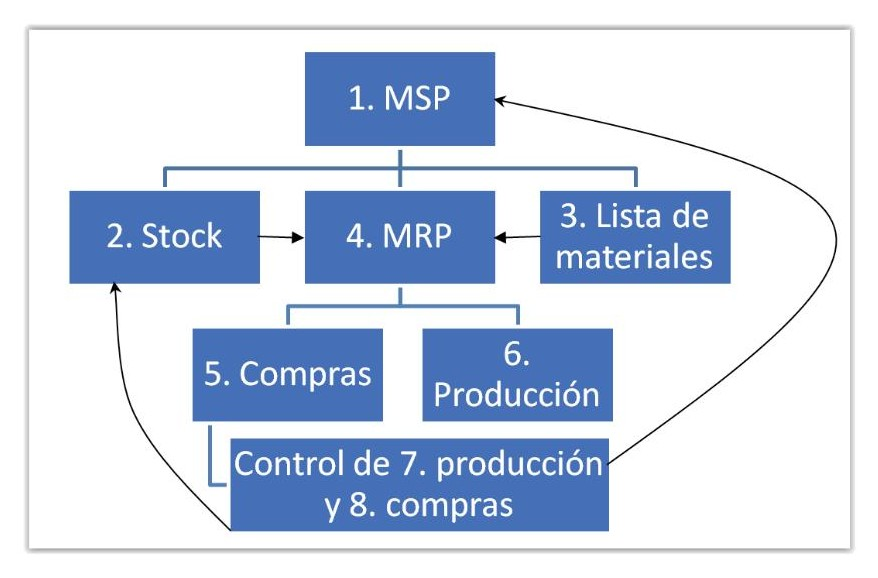
En el MRP II los objetivos son los mismos, pero el concepto de este Plan de Requerimientos es más amplio e integra otras funciones como la financiera e incluso algoritmos heurísticos que permitan mejorar la financiación y otros departamentos de la empresa con los objetivos de la planificación de los materiales. Si bien el MRP I suele estar basado en sistemas informáticos, el MRP II sólo existe en caso de sistemas informáticos integrados de todos los departamentos afectado en la producción.
2.9. Condiciones de almacenamiento
El almacenamiento de componentes y artículos eléctricos debe realizarse en condiciones óptimas para su conservación en relación con aspectos como la temperatura, la humedad, a la exposición a rayos solares, intemperie, etc.
Los fabricantes deben documentar las condiciones en que sus productos deben ser almacenados y del mismo modo deben estar indicadas características especiales como puede ser la catalogación de frágil en el transporte, posiciones de las cajas si debe existir una cara boca arriba, etc. Del mismo modo que los fabricantes tienen la obligación de facilitar estos datos, nuestra organización tiene la obligación de cumplirlos para evitar que los equipos se vean afectados en su calidad, durabilidad, etc. Del mismo modo también estamos obligados en el momento de hacernos cargo de la custodia de un pedido a realizar una inspección inicial de los materiales, y si detectamos que han podido no cumplirse algunos de estos requisitos de almacenamiento y transporte previo a nuestra custodia a ponerlo en conocimiento de agencia de transportes y del fabricante.
Recuerda
Los almacenamientos deben mantener parámetros correctos de temperatura, humedad y protección de agentes atmosféricos como los rayos salares. Además la manipulación debe evitar roces, choques, etc. evitando cambios bruscos de todas las anteriores magnitudes.
El almacenamiento de equipamiento eléctrico en general será suficiente que se mantengan en condiciones normales de temperatura y humedad. No obstante incluso en buenas condiciones de humedad y temperatura también deben protegerse de cambios buscos de temperatura, porque en algunos elementos pueden producirse condensaciones internas que produzcan oxidación de elementos metálicos que al ser internos no podrían detectarse a simple vista hasta el fallo del elemento.
Del mismo modo los metales deben permanecer cubiertos por sus envoltorios hasta su utilización, evitando roces de cualquier tipo en cubiertas y aislamientos así como contactos con otros metales. Cualquier par de metales que se pongan en contacto podría producir corrosión galvánica.
Los cables no deben ser manipulados arrollándolos en diámetros menores que los que originalmente traían. La curvatura excesiva en un cable podría producir pérdida de sección efectiva en algún punto de su recorrido así como un alargamiento del aislamiento en la cara exterior con el consiguiente riesgo de pérdida de aislamiento efectivo.
Cuando los cables en bobinas se almacenan al exterior deben quedar con todas sus protecciones originales y sus movimientos de debe efectuar mediante elementos de suspensión (grúa) o carretilla elevador, para evitar su contacto directo con el suelo durante los movimientos. Las duelas de protección podrían romperse o incrustarse en la bobina siendo origen de posibles lesiones al cable. Se revisarán los posibles daños ocasionados al cable como resultado de un anormal tratamiento de la bobina en su manipulación durante su almacenamiento y antes de su posterior uso. Una lesión del cable no detectada antes de su instalación puede reducir la vida útil del mismo. Además se verificará que no existan fuentes de calor cercanas ni posibilidad de acción directa de rayos solares sobre plásticos que formen parte del aislante o cubierta.
El suelo donde se almacene será duro, uniforme y de buen drenaje, si es a la intemperie. Las bobinas conservarán las duelas de protección hasta su tendido. Evitar la rodadura sistemática y, en todo caso, siguiendo el sentido del enrollamiento original a fin de que no se aflojen las espiras de cable y se arrastren por el suelo. Se cuidará de no dejar los extremos sin protección, tal como se expide de nuestros almacenes, a la vez que estén en el mismo sentido al de la lluvia. Los cables sobrantes de obra se enrollarán, para su almacenamiento, sobre bobinas de núcleo igual o mayor que la original de suministro. Si se desconoce el arrollamiento original de un cable, utilizar como núcleo 20 veces el diámetro exterior del cable como mínimo. También es habitual realizar un saneo del cable antes de su utilización, mediante el desecho de la primera parte del mismo que hubiera podido estar afectado a condiciones más severas o haber absorbido por capilaridad algún tipo de líquido, polvo, etc..
Las temperaturas demasiado altas podrán producir deformaciones sobre los plásticos y componentes. En general si los plásticos son termoestables no resultarán definitivas, pero en caso de PVC o similares pueden quedar deformados permanentemente. Las bajas temperaturas además pueden producir sobre los plásticos en general importantes pérdidas de flexibilidad de modo que acciones mecánicas bruscas a bajas temperaturas como golpes o movimientos rápidos pueden producir roturas o cuarteos al material que pueden ser determinantes en su posterior fallo de aislamiento o absorción de humedades, partículas etc. de modo que en el caso de bajas temperaturas se recomienda una atemperado previo a su uso y una manipulación parsimoniosa hasta este atemperado.
2.10. Procedimiento administrativo de planificación y de ejecución
Cuando hablamos de procedimientos nos referimos al conjunto de reglas por las que regirnos en una determinada actividad. Los procedimientos administrativos referidos a la administración de la planificación compondrá el proceso de administrar las distintas tareas y recursos para la obtención correcta de unos objetivos que en nuestro caso irán asociados a una planificación prevista y el control de su correcta ejecución conforme a especificaciones, costes, consumo de recursos etc.
Una planificación previa de los trabajos de ejecución de instalaciones eléctricas debe ser planteada dentro de los objetivos de logro de la empresa y debe resultar ajustada, posible y conforme a los objetivos planteados por la organización. Si los objetivos resultaran inviables entraríamos en una planificación incorrecta que resultará que la planificación así realizada habrá resultado errónea
y por tanto los recursos calculados para obtenerla habrá incurrido en gastos extraordinarios que posteriormente no habrán alcanzado en objetivo de beneficio previsto. Por el contrario una planificación excesivamente conformista producirá una pérdida de oportunidades de negocio que al desaprovecharse redundará en menores beneficios de los plausibles conllevando una pérdida de competitividad por parte de la organización. Por tanto los objetivos en que se planifique la actividad y por tanto el cálculo de los recursos debe ser siempre un equilibrio dentro de objetivos alcanzables.
Para el control correcto de los objetivos de una planificación se emplean indicadores como productividad, eficacia o eficiencia con objeto de mantener niveles de los mismos ajustados y basar en ellos futuras programaciones. Definiremos estos indicadores:
Productividad
Se define como la relación entre la cantidad de bienes y servicios producidos y la cantidad de en un periodo de tiempo dado. En general diremos que un recurso (material, máquina o mano de obra) es más productivo que otro si en las mismas condiciones de tiempo obtiene mayor cantidad de outputs (salidas).
Productividad= (Cantidad de producción)/(Perido de tiempo empleado)
Eficacia
La eficacia mide la capacidad de obtener el resultado o el efecto que se desea tras la realización de una acción. Se obtiene como el cociente entre el logro obtenido en función de la meta propuesta.
No es necesario tener un 100% de eficacia en la producción, pero sí mantener un nivel adecuado de este valor, pues si no entraríamos en planificaciones de recursos de mano de obra y materiales por encima de nuestra capacidad de producción, generando pérdidas de beneficio.
Productividad= (Cantidad de producción)/(Perido de tiempo empleado)
Eficiencia
Se trata aquí de definir la eficiencia en términos económicos. Un sistema de producción es eficiente, si para unos inputs dados obtiene el máximo de outputs posibles.
Eficacia= (Logro obtenido)/(Cantidad de recurso empleados)
Todos estos parámetros nos servirán de indicadores que servirán de base a futuras planificaciones y su correcto control. Nótese por ejemplo que no es útil ser muy productivo y eficaz si no existe una buena eficiencia, es decir si se produce mucho en términos de tiempo cumpliendo previsiones pero consumiendo enormes recursos para ello la rentabilidad obtenida en términos económicos no será buena.
Si por el contrario se logra una gran eficiencia pero para ello se ha incurrido en espacios temporales muy amplios con baja productividad, aunque se hayan obtenido en términos económicos buenos resultados y se haya cumplido con la eficacia prevista, la organización habrá tardado mucho en obtener resultados y por tanto habrá perdido beneficio por haber perdido oportunidad de realizar otros trabajos y por tanto sus beneficios de producción se habrán dividido entre mayores costes fijos de la organización.
Por último si la eficacia no es la esperada al margen de la productividad y la eficiencia ningún objetivo se podría cumplir pues todos los cálculos de materiales, almacenes y medios habrán sido realizados sobre valores erróneos y por tanto en términos económicos los resultados no habrán sido los esperados.
Desarrollo de la planificación MPS (Plan Maestro de Producción)
Es siempre el paso previo para poner en marcha el MRP. Una vez llevado a cabo el plan maestro, es preciso comprobar que se dispone de la capacidad para llevarlo a cabo lo que se conoce como planificación aproximada (Rough- Cut). Para ello pueden emplearse herramientas como las listas de capacidad o perfiles de recursos. Para la redacción y mejora del programa maestro detallado, el horizonte temporal no suele emplear más de unos pocos meses, dividido habitualmente en semanas.
Se pueden diferenciar dos tipos de plan maestro:
El plan maestro agregado: es un plan genérico habitualmente empleado mes a mes en un horizonte de un año aprox. También se emplea cuando el número de variantes de los productos a instalar es muy grande y se tiene que agrupar por familias.
El plan maestro detallado: Busca establecer de forma exacta las necesidades de recursos y hacer cálculos sobre capacidad y necesidades. No suele detallarse más de unas semanas o meses.
Suele encajarse con la definición del período congelado y el firme que definimos a continuación:
Definición
Periodo congelado: se considera periodo congelado a aquel tiempo en que la empresa no aceptará otras obras que las que ya tienen contratadas o comprometidas, de modo que estos plazos los requerimientos de mano de obra y materiales no pueden ser modificados.
Periodo en firme: son los periodos de tiempo en los que la cantidad de trabajo puede sufrir variaciones. Se basa en previsiones y trabajos comprometidos, pero sobre los que aún se pueden producir modificaciones por ejemplo en calidades o marcas de los equipos a emplear, alteraciones de características del cableado, etc.
Periodo abierto: en este periodo la empresa sólo cuenta con previsiones, no estando aún comprometidos sus trabajos ni por tanto determinadas las necesidades de recursos, aunque sí pueden existir objetivos sobre ellos.
2.11. Software de gestión de almacenes
Cada vez es más habitual que se empleen software de gestión de almacén en obras eléctrica sobre todo si éstas son de cierta relevancia. La evolución del mercado ha generado gran cantidad de programas informáticos de gestión de almacenes, conocidos como SGA (Software de gestión de almacenes).
Estos software incorporan la misma estructura vista en el presente texto, con la ventaja de que las lógicas de programación permiten gestionar las reglas de entrada salida más dificultosas con total control de las posiciones y una gran disponibilidad de los datos en tiempo real. Además algunos integran herramientas especiales como radiofrecuencia, lectores de códigos, impresión de etiquetas, o sistemas semiautomáticos de ubicación y picking, control de movimientos de cargas y equipos de carga, etc.
Si bien antiguamente era habitual encontrarse programas específicos de un centro o bases de datos realizadas bajo pedido para una organización particular, la tendencia actual del mercado es a instalar software específicos, dado que los primeros tienen la desventaja de necesitar actualizaciones particulares para adaptar el software a nuevo requerimientos de modo que acaba resultando más caro y lento de adaptar que otros software de desarrollo general que además suelen permitir una parametrización específica para empresa. Se llega incluso a casos de software de tipo gratuito o al menos versiones gratuitas más básicas como pueda ser el software de gestión de almacenes.
Sin embargo el software de gestión de almacenes suele ser insuficiente para las organizaciones de cierta importancia, que suelen requerir además una integración en diferentes departamentos implicados de la empresa como gestión de compras, ejecución de MRP, planes de producción (MSP), contabilidad, departamento financiero, personal, etc. De esta necesidad surgen los programas de software tipo ERP de sus siglas en inglés Enterprise Resources Planning, o planificadores de recursos de empresa. Estos programas informáticos son mucho más amplios que los simples SGA, y tienen estructuras modulares de modo que permiten integrar aquellos módulos que la organización necesite, siendo el SGA sólo uno de estos módulos.
Ejemplos de ERP son los programas: SAP R/3, Siebel, Navision, NG, etc.
Estructura de módulos integrados de los ERP
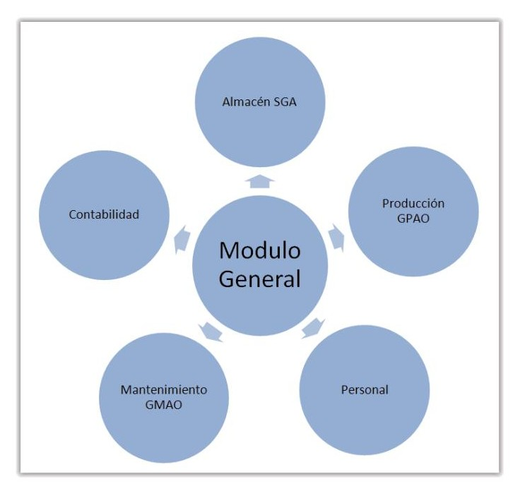
UD2 Lo más importante
La organización de almacén implicará una zona de recepción, pulmón de entrada, localizaciones de almacenamiento, pasillos, pulmón de salida, etc. que deben organizarse en función de los materiales a gestionar y sus reglas de almacenamiento.
Las reglas de almacenamiento más comunes serán LIFO, FIFO, FEFO, y deben emplearse en consonancia con los materiales que vayamos a trabajar.
Para la mejor organización de trabajo los almacenes deben clasificar los artículos en función de su importancia a través de clasificaciones como la clasificación ABC
Las operaciones habituales dentro del almacén serán: recepción de mercancías, control de calidad, ubicación de artículos (Putaway), desembalaje y recopilación de unidades (picking), Empaquetado para despacho (packing), despacho de mercancías (shipping), y actividades de conteo.
Toda la actividad de almacenamiento se registrará en ficheros de entradas, salidas, artículos, etc. asociando los datos necesarios para cada tipo de artículos a códigos identificativos de sus operaciones permaneciendo accesibles estos registros.
Los materiales deben pedirse en ciclos de pedido manteniendo cantidades optimizadas a partir del tipo de demanda de cada artículo, el periodo de necesidad manteniendo un equilibrio económico entre la necesidad
de almacenamiento y los costes de gestión de los pedidos (optimización de pedidos)
Las materias primas deben permanecer en condiciones de mantenimiento que no alteres su calidad, y asegurando un cumplimiento de especificaciones de los artículos a los requerimientos de las instalaciones a realizar, cumpliendo normativas específicas en cada caso.
Periódicamente se deben realizar conteos del material existentes para mantener datos consistentes entre los artículos realmente almacenados y los registros de los mismos, sirviendo también para el correcto mantenimiento de los artículos y el cálculo económico correcto de los productos en stock.
La planificación del almacenamiento implica una dinámica de administración de inventarios que no es libre sino que está asociada a los planes de producción maestros y planes de requerimientos de materiales, los cuales evolucionan constantemente.
En los últimos tiempos y dado la complejidad de estos controles y gestiones de inventarios las herramientas informáticas tienden a unificar en sistemas de información las labores de almacenamiento al resto de estamentos de la empresa para obtener una gestión común y sistemas que permitan apoyar las decisiones estratégicas como capacidad, tiempos de pedidos, etc.
UD2 Autoevaluación
1. ¿Qué entendemos por aprovisionamiento?
a. Toda la cadena logística.
b. El uso del cliente final.
c. La actividad de trasformación.
d. Parte de la logística en que nuestra propia organización actúa como
cliente.
2. ¿Qué es el Putaway en términos de almacenamiento?
a. La recepción de mercancía.
b. Los artículos que descansan en los pulmones.
c. La actividad de ubicar artículos en las zonas de almacenaje.
d. El envío de artículos a la obra.
3. ¿Qué es el pulmón de recepción?
a. La zona donde se empaqueta la carga.
b. El muelle por donde entra la mercancía.
c. La zona de almacenaje.
d. Es la localización donde la mercancía de entrada espera hasta su
ubicación definitiva.
4. ¿Qué es la clasificación ABC?
a. Una forma de clasificar artículos en función de su tamaño.
b. Una clasificación de los artículos en función de su importancia relativa.
c. Una forma de separar los productos más caros de los más baratos.
d. Una forma de etiquetar los productos para su conteo.
5. ¿Qué se conoce por grupaje?
a. Es la actividad de agrupar artículos similares en nuestro almacén.
b. Es la separación de mercancías obsoletas de las que aún son válidas.
c. Es lo que se produce cuando falta stock.
d. Es la actividad de agrupar envíos de diferentes orígenes para que
compartan medio de transporte.
6. ¿Qué medidas tiene el Europalet?
a. 60x100.
b. 80x100.
c. 100x100.
d. 100x120.
7. ¿Qué es la trazabilidad?
a. La actividad de recepcionar mercancía.
b. Las etiquetas homologadas.
c. La actividad de trazar artículos con sus entradas y salidas.
d. La actividad de separar trazas de otros materiales que pueden agruparse durante el transporte.
8. ¿Qué conocemos por ciclo de compra?
a. La cantidad de producto que pedimos cada vez.
b. El tiempo transcurridos entre dos pedidos.
c. Las veces que pedimos un material en el periodo T.
d. Ninguna de las anteriores.
9. ¿Qué indica el índice IP de un material?
a. La protección contra entrada de líquidos.
b. La tensión de aislamiento.
c. Su protección contra los rayos ultravioleta.
d. Su protección por barreras o envolvente.
10. ¿Qué es un MRP?
a. La lista de materiales en stock.
b. Un sistema informático.
c. Un plan de requerimiento de materiales.
d. El valor económico de los productos almacenados.